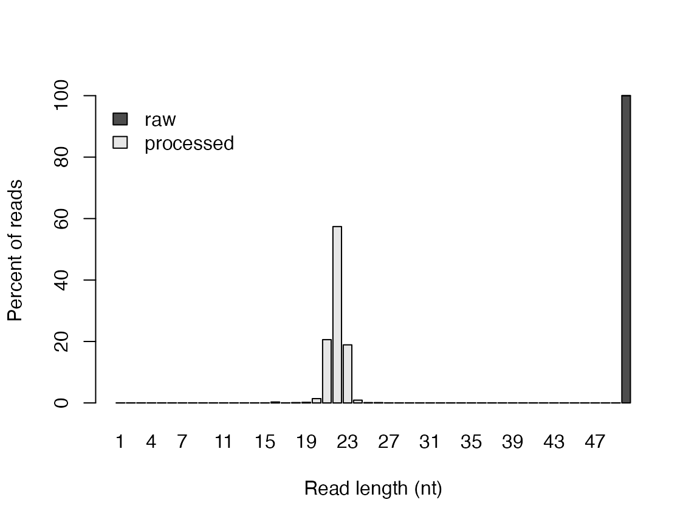
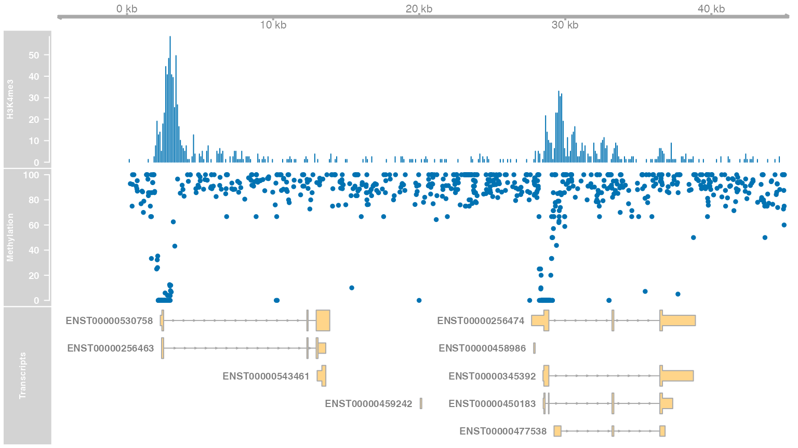
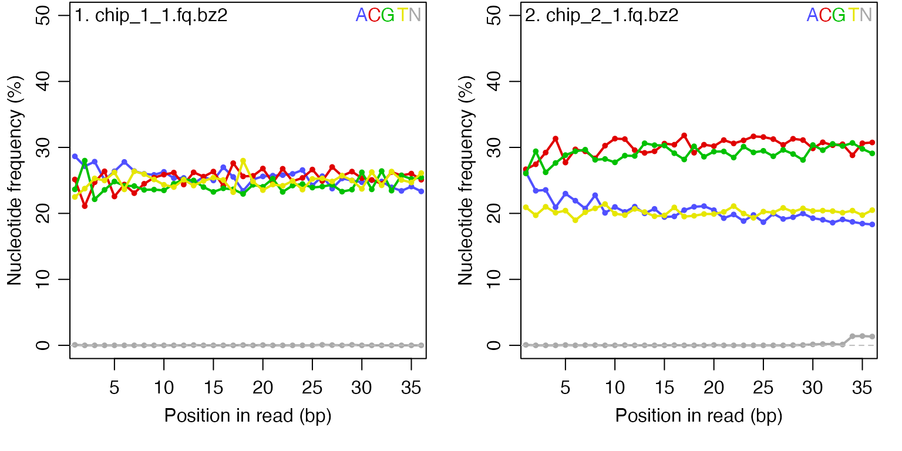
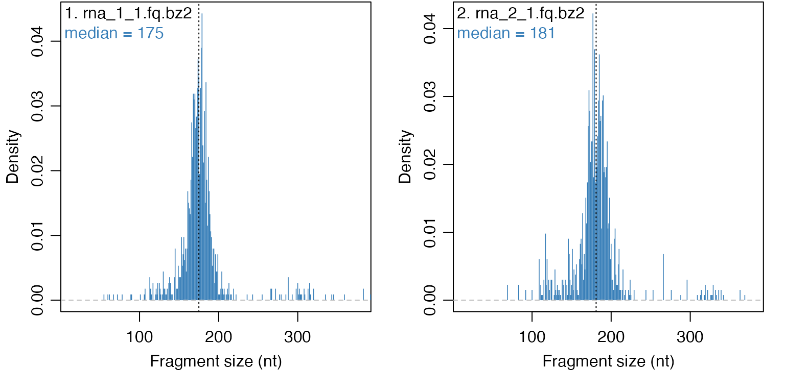

An introduction to QuasR
Michael Stadler
Dimos Gaidatzis
Charlotte Soneson
Anita Lerch
12 October, 2020
QuasR.Rmd
Introduction
The QuasR package (short for Quantify and annotate short reads in R) integrates the functionality of several R packages (such as IRanges (Lawrence et al. 2013) and Rsamtools) and external software (e.g. bowtie, through the Rbowtie package, and HISAT2, through the Rhisat2 package). The package aims to cover the whole analysis workflow of typical high throughput sequencing experiments, starting from the raw sequence reads, over pre-processing and alignment, up to quantification. A single R script can contain all steps of a complete analysis, making it simple to document, reproduce or share the workflow containing all relevant details.
The current QuasR release supports the analysis of single read and paired-end ChIP-seq (chromatin immuno-precipitation combined with sequencing), RNA-seq (gene expression profiling by sequencing of RNA) and Bis-seq (measurement of DNA methylation by sequencing of bisulfite-converted genomic DNA) experiments. It has been successfully used with data from Illumina, 454 Life Technologies and SOLiD sequencers, the latter by using bam files created externally of QuasR.
Preliminaries
Citing QuasR
If you use QuasR (Gaidatzis et al. 2015) in your work, you can cite it as follows:
citation("QuasR")
##
## Please use the QuasR reference below to cite the software itself. If
## you were using qAlign with Rbowtie as aligner, it can be cited as
## Langmead et al. (2009) (unspliced alignments) or Au et al. (2010)
## (spliced alignments). If you were using qAlign with Rhisat2 as aligner,
## it can be cited as Kim et al. (2015).
##
## Gaidatzis D, Lerch A, Hahne F, Stadler MB. QuasR: Quantification and
## annotation of short reads in R. Bioinformatics 31(7):1130-1132
## (2015).
##
## Langmead B, Trapnell C, Pop M, Salzberg SL. Ultrafast and
## memory-efficient alignment of short DNA sequences to the human
## genome. Genome Biology 10(3):R25 (2009).
##
## Au KF, Jiang H, Lin L, Xing Y, Wong WH. Detection of splice junctions
## from paired-end RNA-seq data by SpliceMap. Nucleic Acids Research,
## 38(14):4570-8 (2010).
##
## Kim D, Langmead B, Salzberg SL. HISAT: a fast spliced aligner with
## low memory requirements. Nat Methods, 12(4):357-60 (2015).
##
## This free open-source software implements academic research by the
## authors and co-workers. If you use it, please support the project by
## citing the appropriate journal articles.
## To see these entries in BibTeX format, use 'print(<citation>,
## bibtex=TRUE)', 'toBibtex(.)', or set
## 'options(citation.bibtex.max=999)'.Installation
QuasR is a package for the R computing environment and it is assumed that you have already installed R. See the R project at (http://www.r-project.org). To install the latest version of QuasR, you will need to be using the latest version of R. QuasR is part of the Bioconductor project at (http://www.bioconductor.org). To get QuasR together with its dependencies you can use
if (!require("BiocManager")) install.packages("BiocManager") BiocManager::install("QuasR")
Bioconductor works on a 6-monthly official release cycle. As with other Bioconductor packages, there are always two versions of QuasR. Most users will use the current official release version, which will be installed by BiocManager::install if you are using the current release version of R. There is also a development version of QuasR that includes new features due for the next official release. The development version will be installed if you are using the development version of Bioconductor (see version = "devel" in BiocManager). The official release version always has an even second number (for example 1.20.1), whereas the developmental version has an odd second number (for example 1.21.4).
Loading of QuasR and other required packages
In order to run the code examples in this vignette, the QuasR package and a few additional packages need to be loaded:
suppressPackageStartupMessages({ library(QuasR) library(BSgenome) library(Rsamtools) library(rtracklayer) library(GenomicFeatures) library(Gviz) })
## Warning: multiple methods tables found for 'rowRanges'How to get help
Most questions about QuasR will hopefully be answered by the documentation or references. If you’ve run into a question which isn’t addressed by the documentation, or you’ve found a conflict between the documentation and software itself, then there is an active support community which can offer help.
The authors of the package (maintainer: Michael Stadler michael.stadler@fmi.ch) always appreciate receiving reports of bugs in the package functions or in the documentation. The same goes for well-considered suggestions for improvements.
Any other questions or problems concerning QuasR should be posted to the Bioconductor support site (https://support.bioconductor.org). Users posting to the support site for the first time should read the helpful posting guide at (https://support.bioconductor.org/info/faq/). Note that each function in QuasR has it’s own help page, as described in the section @ref(introToR). Posting etiquette requires that you read the relevant help page carefully before posting a problem to the site.
Quick Start
A brief introduction to R
If you already use R and know about its command line interface, just skip this section and continue with section @ref(sampleQuasRsession).
The structure of this vignette and in particular this section is based on the excellent user guide of the limma package, which we would like to hereby acknowledge. R is a program for statistical computing. It is a command-driven language meaning that you have to type commands into it rather than pointing and clicking using a mouse. In this guide it will be assumed that you have successfully downloaded and installed R from (http://www.r-project.org) as well as QuasR (see section @ref(installation)). A good way to get started is to type
at the R prompt or, if you’re using R for Windows, to follow the drop-down menu items Help \(\succ\) Html help. Following the links Packages \(\succ\) QuasR from the html help page will lead you to the contents page of help topics for functions in QuasR.
Before you can use any QuasR commands you have to load the package by typing
library(QuasR)
at the R prompt. You can get help on any function in any loaded package by typing ? and the function name at the R prompt, for example
?preprocessReads
or equivalently
help("preprocessReads")
for detailed help on the preprocessReads function. The individual function help pages are especially important for listing all the arguments which a function will accept and what values the arguments can take.
A key to understanding R is to appreciate that anything that you create in R is an object. Objects might include data sets, variables, functions, anything at all. For example
x <- 2
will create a variable x and will assign it the value 2. At any stage of your R session you can type
ls()
to get a list of all the objects you have created. You can see the contents of any object by typing the name of the object at the prompt. The following command will print out the contents of x:
xWe hope that you can use QuasR without having to spend a lot of time learning about the R language itself but a little knowledge in this direction will be very helpful, especially when you want to do something not explicitly provided for in QuasR or in the other Bioconductor packages. For more details about the R language see An Introduction to R which is available from the online help. For more background on using R for statistical analysis see (Dalgaard 2002).
Sample QuasR session
This is a quick overview of what an analysis could look like for users preferring to jump right into an analysis. The example uses data that is provided with the QuasR package, which is first copied to the current working directory, into a subfolder called "extdata":
file.copy(system.file(package="QuasR", "extdata"), ".", recursive=TRUE)
## [1] TRUEThe sequence files to be analyzed are listed in sampleFile (see section @ref(sampleFile) for details). The sequence reads will be aligned using bowtie (Langmead et al. 2009) (from the Rbowtie package (Hahne, Lerch, and Stadler 2012)) to a small reference genome (consisting of three short segments from the hg19 human genome assembly, available in full for example in the BSgenome.Hsapiens.UCSC.hg19 package). Make sure that you have sufficient disk space, both in your R temporary directory (tempdir()) as well as to store the resulting alignments (see section @ref(qAlign)).
sampleFile <- "extdata/samples_chip_single.txt" genomeFile <- "extdata/hg19sub.fa" proj <- qAlign(sampleFile, genomeFile)
## Creating .fai file for: /Users/runner/work/QuasR/QuasR/vignettes/extdata/hg19sub.fa## alignment files missing - need to:## create alignment index for the genome## create 2 genomic alignment(s)## Creating an Rbowtie index for /Users/runner/work/QuasR/QuasR/vignettes/extdata/hg19sub.fa## Finished creating index## Testing the compute nodes...OK
## Loading QuasR on the compute nodes...OK
## Available cores:
## Mac-1602493909147.local: 1
## Performing genomic alignments for 2 samples. See progress in the log file:
## /Users/runner/work/QuasR/QuasR/vignettes/QuasR_log_17d55137ec1e.txt
## Genomic alignments have been created successfully
proj## Project: qProject
## Options : maxHits : 1
## paired : no
## splicedAlignment: FALSE
## bisulfite : no
## snpFile : none
## geneAnnotation : none
## Aligner : Rbowtie v1.29.1 (parameters: -m 1 --best --strata)
## Genome : /Users/runner/work/QuasR/QuasR/vignettes/extdata/hg19sub.fa (file)
##
## Reads : 2 files, 2 samples (fastq format):
## 1. chip_1_1.fq.bz2 Sample1 (phred33)
## 2. chip_2_1.fq.bz2 Sample2 (phred33)
##
## Genome alignments: directory: same as reads
## 1. chip_1_1_17d52e6ecf3a.bam
## 2. chip_2_1_17d56ce700a6.bam
##
## Aux. alignments: noneThe proj object keeps track of all the information of a sequencing experiment, for example where sequence and alignment files are stored, and what aligner and reference genome was used to generate the alignments.
Now that the alignments have been generated, further analyses can be performed. A quality control report is saved to the "extdata/qc_report.pdf" file using the qQCReport function.
qQCReport(proj, "extdata/qc_report.pdf")
## collecting quality control data## creating QC plotsThe number of alignments per promoter region is quantified using qCount. Genomic coordinates for promoter regions are imported from a gtf file (annotFile) into the GRanges-object with the name promReg:
library(rtracklayer) library(GenomicFeatures) annotFile <- "extdata/hg19sub_annotation.gtf" txStart <- import.gff(annotFile, format="gtf", feature.type="start_codon") promReg <- promoters(txStart, upstream=500, downstream=500) names(promReg) <- mcols(promReg)$transcript_name promCounts <- qCount(proj, query=promReg)
## counting alignments...done
promCounts## width Sample1 Sample2
## TNFRSF18-003 1000 20 4
## TNFRSF18-002 1000 20 4
## TNFRSF18-001 1000 20 4
## TNFRSF4-001 1000 5 2
## SDF4-007 1000 8 2
## SDF4-001 1000 8 2
## SDF4-002 1000 8 2
## SDF4-201 1000 8 2
## B3GALT6-001 1000 25 274
## RPS7-001 1000 121 731
## RPS7-008 1000 121 731
## RPS7-009 1000 121 731
## RPS7-005 1000 121 731
## C3orf10-201 1000 176 496
## C3orf10-001 1000 176 496
## AC034193.1-201 1000 5 2
## VHL-001 1000 61 336
## VHL-002 1000 61 336
## VHL-201 1000 61 336QuasR Overview
The following scheme shows the major components of QuasR and their relationships:
QuasR works with data (sequences and alignments, reference genome, etc.) that are stored as files on your storage (the gray cylinder on the lower left of Figure above, see section @ref(fileStorageLocations) for details on storage locations). QuasR does not need a database management system, or these files to be named and organized according to a specific scheme.
In order to keep track of directory paths during an analysis, QuasR makes use of a qProject object that is returned by the qAlign function, which at the minimum requires two inputs: the name of a samples text file (see section @ref(sampleFile) for details), and the reference genome for the alignments (see section @ref(genome)).
The qProject object is the main argument passed to subsequent functions such as qQCReport and qCount. The qProject object contains all necessary information on the current project and eliminates the need to repeatedly enter the same information. All functions that work on qProject objects can be recognized by their names starting with the letter q.
Read quantification (apart from quantification of methylation which has its own function qMeth) is done using the qCount function: It counts the alignments in regions of interest (e.g. promoters, genes, exons, etc.) and produces a count table (regions in rows, samples in columns) for further visualization and analysis. The count table can also be used as input to a statistical analysis using packages such as edgeR (Robinson, McCarthy, and Smyth 2010), DESeq (Anders and Huber 2010), DESeq2 (Love, Huber, and Anders 2014), TCC (Sun et al. 2013), DEXSeq (Anders, Reyes, and Huber 2012) or baySeq (Hardcastle and Kelly 2010).
In summary, a typical QuasR analysis consists of the following steps (some of them are optional):
-
preprocessReads(optional): Remove adapters from start or end of reads, filter out reads of low quality, short length or low complexity (section @ref(preProcessing)).
- Prepare samples file: List sequence files or alignments, provide sample names (section @ref(sampleFile)).
- Prepare auxiliary file (optional): List additional reference sequences for alignment of reads not matching the reference genome (section @ref(auxiliaryFile)).
-
qAlign: CreateqProjectobject and specify project parameters. Also download BSgenome package, create aligner indices and align reads if not already existing (section @ref(qAlign)).
-
qQCReport(optional): Create quality control report with plots on sequence qualities and alignment statistics (section @ref(qQCReport)).
-
qExportWig(optional): Export genomic alignments as wiggle tracks for genome browser visualization (section @ref(qExportWig)).
-
qCount: Quantify alignments in regions of interest (section @ref(qCount)).
Recurrent example tasks that may be part of any typical analysis are described in section @ref(exampleTasks). Example workflows for specific experiment types (ChIP-seq, RNA-seq and Bis-seq) are described in section @ref(exampleWorkflows).
File storage locations
Apart from qExportWig and qQCReport, which generate wig files and pdf reports, qAlign is the only function in QuasR that stores files on the disk (see section @ref(qAlign) for details). All files generated by qAlign are listed here by type, together with their default location and how locations can be changed.
-
Temporary files (default:
tempdir()): Temporary files include reference genomes infastaformat, decompressed input sequence files, and temporary alignments in text format, and can require a large amount of disk space. By default, these files will be written to the temporary directory of the R process (as reported bytempdir()). If usingclObjfor parallel processing, this may be thetempdir()from the cluster node(s). An alternative location can be set using theTMPDIRenvironment variable (see?tempdir).
-
Alignment files (
bamformat) (default: same directory as the input sequence files): Alignments against reference genome and auxiliary targets are stored inbamformat in the same directory that also contains the input sequence file (listed insampleFile). Please note that if the input sequence file corresponds to a symbolic link, QuasR will follow the link and use the directory of the original file instead. An alternative directory can be specified with thealignmentsDirargument fromqAlign, which will store allbamfiles in that directory even if the input sequence files are located in different directories.
-
Alignment index files (default: depends on
genomeandsnpFilearguments): Many alignment tools includingbowtierequire an index of the reference sequence to perform alignments. If necessary,qAlignwill build this index automatically and store it in a default location that depends on thegenomeargument:-
BSgenome: Ifgenomeis the name of a BSgenome package (such as"BSgenome.Hsapiens.UCSC.hg19"), the index will be stored as a new R package in the default library path (as reported by.libPaths()[1], see?install.packagesfor details). The name of this index package will be the name of the original BSgenome package with a suffix for the index type, for example"BSgenome.Hsapiens.UCSC.hg19.Rbowtie".
-
fasta: Ifgenomerefers to a reference genome file infastaformat, the index will be stored in a subdirectory at the same location. Similarly, the indices for files listed inauxiliaryFileare store at the location of these files. For example, theRbowtieindex for the genome at"./genome/mm9.fa"is stored in"./genome/mm9.fa.Rbowtie".
-
Allele-specific analysis: A special case is the allele-specific analysis, where reference and alternative alleles listed in
snpFile(e.g."./mySNPs.tab") are injected into thegenome(e.g."BSgenome.Mmusculus.UCSC.mm9") to create two variant genomes to be indexed. These indices are saved at the location of thesnpFilein a directory named aftersnpFile,genomeand the index type (e.g."./mySNPs.tab.BSgenome.Mmusculus.UCSC.mm9.A.fa.Rbowtie").
-
Example tasks
Create a sample file
The sample file is a tab-delimited text file with two or three columns. The first row contains the column names: For a single read experiment, these are ‘FileName’ and ‘SampleName’; for a paired-end experiment, these are ‘FileName1’, ‘FileName2’ and ‘SampleName’. If the first row does not contain the correctly spelled column names, QuasR will not accept the samples file. Subsequent rows contain the input sequence files.
Here are examples of such sample files for a single read experiment:
FileName SampleName chip_1_1.fq.bz2 Sample1 chip_2_1.fq.bz2 Sample2
and for a paired-end experiment:
FileName1 FileName2 SampleName rna_1_1.fq.bz2 rna_1_2.fq.bz2 Sample1 rna_2_1.fq.bz2 rna_2_2.fq.bz2 Sample2
These example files are also contained in the QuasR package and may be used as templates. The path of the files can be determined using:
sampleFile1 <- system.file(package="QuasR", "extdata", "samples_chip_single.txt") sampleFile2 <- system.file(package="QuasR", "extdata", "samples_rna_paired.txt")
The columns FileName for single-read, or FileName1 and FileName2 for paired-end experiments contain paths and names to files containing the sequence data. The paths can be absolute or relative to the location of the sample file. This allows combining files from different directories in a single analysis. For each input sequence file, qAlign will create one alignment file and by default store it in the same directory as the sequence file. Already existing alignment files with identical parameters will not be re-created, so that it is easy to reuse the same sequence files in multiple projects without unnecessarily copying sequence files or recreating alignments.
The SampleName column contains sample names for each sequence file. The same name can be used on several lines to indicate multiple sequence files that belong to the same sample (qCount can use this information to automatically combine counts for one sample from multiple files).
Three file formats are supported for input files (but cannot be mixed within a single sample file):
-
fasta files have names that end with ‘.fa’, ‘.fna’ or ‘.fasta’. They contain only sequences (and no base qualities) and will thus by default be aligned on the basis of mismatches (the best alignment is the one with fewest mismatches).
-
fastq files have names that end with ‘.fq’ or ‘.fastq’. They contain sequences and corresponding base qualities and will be aligned by default using these qualities. The encoding scheme of base qualities is automatically detected for each individual fastq file.
-
bam files have names that end with ‘.bam’. They can be used if the sequence reads have already been aligned outside of QuasR, and QuasR will only be used for downstream analysis based on the alignments contained in the
bamfiles. This makes it possible to use alignment tools that are not available within QuasR, but making use of this option comes with a risk and should only be used by experienced users. For example, it cannot be guaranteed any more that certain assumptions made byqCountare fulfilled by the external aligner (see below). When using externalbamfiles, we recommend to use files which contain only one alignment per read. This may also include multi-hit reads, for which one of the alignments is randomly selected. This allows QuasR to count the total number of reads by counting the total number of alignments. Furthermore, if thebamfiles also contain the unmapped reads, QuasR will be able to calculate the fraction of mapped reads. For bisulfite samples we require ungapped alignments stored in unpaired or paired ff orientation (even if the input reads are fr). For allele-specificbamfiles, QuasR requires an additional tag for each alignment calledXVof typeA(printable character) with the possible valuesR(Reference),U(Unknown) andA(Alternative).
fasta and fastq files can be compressed with gzip, bzip2 or xz (file extensions ‘.gz’, ‘.bz2’ or ‘xz’, respectively) and will be automatically decompressed when necessary.
Working only with bam files after performing alignments
Once alignments have been created, most analyses will only require the bam files and will not access the original raw sequence files anymore. However, re-creating a qProject object by a later identical call to qAlign will still need access to the raw sequences to verify consistency between raw data and alignments. It may be desirable to remove this dependency, for example to archive or move away the raw sequence files and to reclaim used disk space.
This can be achieved using the following procedure involving two sequential calls to qAlign. First, qAlign is called with the orignial sample file (sampleFile1) that lists the raw sequence files, and subsequently with a second sample file (sampleFile2) that lists the bam files generated in the first call. Such a second sample file can be easily generated given the qProject object (proj1) returned by the first call:
sampleFile1 <- "samples_fastq.txt" sampleFile2 <- "samples_bam.txt" proj1 <- qAlign(sampleFile1, genomeFile) write.table(alignments(proj1)$genome, sampleFile2, sep="\t", row.names=FALSE) proj2 <- qAlign(sampleFile2, genomeFile)
The analysis can now be exclusively based on the bam files using sampleFile2 and proj2.
Consistency of samples within a project
The sample file implicitly defines the type of samples contained in the project: single read or paired-end read, sequences with or without qualities. This type will have a profound impact on the downstream analysis. For example, it controls whether alignments will be performed in single or paired-end mode, either with or without base qualities. That will also determine availability of certain options for quality control and quantification in qQCReport and qCount. For consistency, it is therefore required that all samples within a project have the same type; it is not possible to mix both single and paired-end read samples, or fasta and fastq files in a single project (sample file). If necessary, it may be possible to analyse different types of files in separate QuasR projects and combine the derived results at the end.
Create an auxiliary file (optional)
By default QuasR aligns reads only to the reference genome. However, it may be interesting to align non-matching reads to further targets, for example to identify contamination from vectors or a different species, or in order to quantify spike-in material not contained in the reference genome. In QuasR, such supplementary reference files are called auxiliary references and can be specified to qAlign using the auxiliaryFile argument (see section @ref(qAlign) for details). The format of the auxiliary file is similar to the one of the sample file described in section @ref(sampleFile): It contains two columns with column names ‘FileName’ and ‘AuxName’ in the first row. Additional rows contain names and files of one or several auxiliary references in fasta format.
An example auxiliary file looks like this:
FileName AuxName NC_001422.1.fa phiX174
and is available from your QuasR installation at
auxFile <- system.file(package="QuasR", "extdata", "auxiliaries.txt")
Select the reference genome
Sequence reads are primarily aligned against the reference genome. If necessary, QuasR will create an aligner index for the genome. The reference genome can be provided in one of two different formats:
-
a string, referring to the name of a BSgenome package:
## [1] "BSgenome.Alyrata.JGI.v1" ## [2] "BSgenome.Amellifera.BeeBase.assembly4" ## [3] "BSgenome.Amellifera.UCSC.apiMel2" ## [4] "BSgenome.Amellifera.UCSC.apiMel2.masked" ## [5] "BSgenome.Aofficinalis.NCBI.V1" ## [6] "BSgenome.Athaliana.TAIR.04232008" ## [7] "BSgenome.Athaliana.TAIR.TAIR9" ## [8] "BSgenome.Btaurus.UCSC.bosTau3" ## [9] "BSgenome.Btaurus.UCSC.bosTau3.masked" ## [10] "BSgenome.Btaurus.UCSC.bosTau4" ## [11] "BSgenome.Btaurus.UCSC.bosTau4.masked" ## [12] "BSgenome.Btaurus.UCSC.bosTau6" ## [13] "BSgenome.Btaurus.UCSC.bosTau6.masked" ## [14] "BSgenome.Btaurus.UCSC.bosTau8" ## [15] "BSgenome.Btaurus.UCSC.bosTau9" ## [16] "BSgenome.Carietinum.NCBI.v1" ## [17] "BSgenome.Celegans.UCSC.ce10" ## [18] "BSgenome.Celegans.UCSC.ce11" ## [19] "BSgenome.Celegans.UCSC.ce2" ## [20] "BSgenome.Celegans.UCSC.ce6" ## [21] "BSgenome.Cfamiliaris.UCSC.canFam2" ## [22] "BSgenome.Cfamiliaris.UCSC.canFam2.masked" ## [23] "BSgenome.Cfamiliaris.UCSC.canFam3" ## [24] "BSgenome.Cfamiliaris.UCSC.canFam3.masked" ## [25] "BSgenome.Cjacchus.UCSC.calJac3" ## [26] "BSgenome.Dmelanogaster.UCSC.dm2" ## [27] "BSgenome.Dmelanogaster.UCSC.dm2.masked" ## [28] "BSgenome.Dmelanogaster.UCSC.dm3" ## [29] "BSgenome.Dmelanogaster.UCSC.dm3.masked" ## [30] "BSgenome.Dmelanogaster.UCSC.dm6" ## [31] "BSgenome.Drerio.UCSC.danRer10" ## [32] "BSgenome.Drerio.UCSC.danRer11" ## [33] "BSgenome.Drerio.UCSC.danRer5" ## [34] "BSgenome.Drerio.UCSC.danRer5.masked" ## [35] "BSgenome.Drerio.UCSC.danRer6" ## [36] "BSgenome.Drerio.UCSC.danRer6.masked" ## [37] "BSgenome.Drerio.UCSC.danRer7" ## [38] "BSgenome.Drerio.UCSC.danRer7.masked" ## [39] "BSgenome.Dvirilis.Ensembl.dvircaf1" ## [40] "BSgenome.Ecoli.NCBI.20080805" ## [41] "BSgenome.Gaculeatus.UCSC.gasAcu1" ## [42] "BSgenome.Gaculeatus.UCSC.gasAcu1.masked" ## [43] "BSgenome.Ggallus.UCSC.galGal3" ## [44] "BSgenome.Ggallus.UCSC.galGal3.masked" ## [45] "BSgenome.Ggallus.UCSC.galGal4" ## [46] "BSgenome.Ggallus.UCSC.galGal4.masked" ## [47] "BSgenome.Ggallus.UCSC.galGal5" ## [48] "BSgenome.Ggallus.UCSC.galGal6" ## [49] "BSgenome.Hsapiens.1000genomes.hs37d5" ## [50] "BSgenome.Hsapiens.NCBI.GRCh38" ## [51] "BSgenome.Hsapiens.UCSC.hg17" ## [52] "BSgenome.Hsapiens.UCSC.hg17.masked" ## [53] "BSgenome.Hsapiens.UCSC.hg18" ## [54] "BSgenome.Hsapiens.UCSC.hg18.masked" ## [55] "BSgenome.Hsapiens.UCSC.hg19" ## [56] "BSgenome.Hsapiens.UCSC.hg19.masked" ## [57] "BSgenome.Hsapiens.UCSC.hg38" ## [58] "BSgenome.Hsapiens.UCSC.hg38.masked" ## [59] "BSgenome.Mdomestica.UCSC.monDom5" ## [60] "BSgenome.Mfascicularis.NCBI.5.0" ## [61] "BSgenome.Mfuro.UCSC.musFur1" ## [62] "BSgenome.Mmulatta.UCSC.rheMac10" ## [63] "BSgenome.Mmulatta.UCSC.rheMac2" ## [64] "BSgenome.Mmulatta.UCSC.rheMac2.masked" ## [65] "BSgenome.Mmulatta.UCSC.rheMac3" ## [66] "BSgenome.Mmulatta.UCSC.rheMac3.masked" ## [67] "BSgenome.Mmulatta.UCSC.rheMac8" ## [68] "BSgenome.Mmusculus.UCSC.mm10" ## [69] "BSgenome.Mmusculus.UCSC.mm10.masked" ## [70] "BSgenome.Mmusculus.UCSC.mm8" ## [71] "BSgenome.Mmusculus.UCSC.mm8.masked" ## [72] "BSgenome.Mmusculus.UCSC.mm9" ## [73] "BSgenome.Mmusculus.UCSC.mm9.masked" ## [74] "BSgenome.Osativa.MSU.MSU7" ## [75] "BSgenome.Ppaniscus.UCSC.panPan1" ## [76] "BSgenome.Ppaniscus.UCSC.panPan2" ## [77] "BSgenome.Ptroglodytes.UCSC.panTro2" ## [78] "BSgenome.Ptroglodytes.UCSC.panTro2.masked" ## [79] "BSgenome.Ptroglodytes.UCSC.panTro3" ## [80] "BSgenome.Ptroglodytes.UCSC.panTro3.masked" ## [81] "BSgenome.Ptroglodytes.UCSC.panTro5" ## [82] "BSgenome.Ptroglodytes.UCSC.panTro6" ## [83] "BSgenome.Rnorvegicus.UCSC.rn4" ## [84] "BSgenome.Rnorvegicus.UCSC.rn4.masked" ## [85] "BSgenome.Rnorvegicus.UCSC.rn5" ## [86] "BSgenome.Rnorvegicus.UCSC.rn5.masked" ## [87] "BSgenome.Rnorvegicus.UCSC.rn6" ## [88] "BSgenome.Scerevisiae.UCSC.sacCer1" ## [89] "BSgenome.Scerevisiae.UCSC.sacCer2" ## [90] "BSgenome.Scerevisiae.UCSC.sacCer3" ## [91] "BSgenome.Sscrofa.UCSC.susScr11" ## [92] "BSgenome.Sscrofa.UCSC.susScr3" ## [93] "BSgenome.Sscrofa.UCSC.susScr3.masked" ## [94] "BSgenome.Tgondii.ToxoDB.7.0" ## [95] "BSgenome.Tguttata.UCSC.taeGut1" ## [96] "BSgenome.Tguttata.UCSC.taeGut1.masked" ## [97] "BSgenome.Tguttata.UCSC.taeGut2" ## [98] "BSgenome.Vvinifera.URGI.IGGP12Xv0" ## [99] "BSgenome.Vvinifera.URGI.IGGP12Xv2" ## [100] "BSgenome.Vvinifera.URGI.IGGP8X"genomeName <- "BSgenome.Hsapiens.UCSC.hg19"
In this example, the BSgenome package "BSgenome.Hsapiens.UCSC.hg19" refers to an unmasked genome; alignment index and alignments will be performed on the full unmasked genome sequence (recommended). If using a masked genome (e.g. "BSgenome.Hsapiens.UCSC.hg19.masked"), masked regions will be replaced with "N" bases, and this hard-masked version of the genome will be used for creating the alignment index and further alignments.
-
a file name, referring to a sequence file containing one or several reference sequences (e.g. chromosomes) in
fastaformat:genomeFile <- system.file(package="QuasR", "extdata", "hg19sub.fa")
Sequence data pre-processing
The preprocessReads function can be used to prepare the input sequence files prior to alignment. The function takes one or several sequence files (or pairs of files for a paired-end experiment) in fasta or fastq format as input and produces the same number of output files with the processed reads.
In the following example, we truncate the reads by removing the three bases from the 3’-end (the right side), remove the adapter sequence AAAAAAAAAA from the 5’-end (the left side) and filter out reads that, after truncation and adapter removal, are shorter than 14 bases or contain more than 2 N bases:
td <- tempdir() infiles <- system.file(package="QuasR", "extdata", c("rna_1_1.fq.bz2","rna_2_1.fq.bz2")) outfiles <- file.path(td, basename(infiles)) res <- preprocessReads(filename = infiles, outputFilename = outfiles, truncateEndBases = 3, Lpattern = "AAAAAAAAAA", minLength = 14, nBases = 2)
## filtering /Users/runner/work/_temp/Library/QuasR/extdata/rna_1_1.fq.bz2## filtering /Users/runner/work/_temp/Library/QuasR/extdata/rna_2_1.fq.bz2
res## rna_1_1.fq.bz2 rna_2_1.fq.bz2
## totalSequences 3002 3000
## matchTo5pAdapter 466 463
## matchTo3pAdapter 0 0
## tooShort 107 91
## tooManyN 0 0
## lowComplexity 0 0
## totalPassed 2895 2909unlink(outfiles)
preprocessReads returns a matrix with a summary of the pre-processing. The matrix contains one column per (pair of) input sequence files, and contains the total number of reads (totalSequences), the number of reads that matched to the five prime or three prime adapters (matchTo5pAdapter and matchTo3pAdapter), the number of reads that were too short (tooShort), contained too many non-base characters (tooManyN) or were of low sequence complexity (lowComplexity, deactivated by default). Finally, the number of reads that passed the filtering steps is reported in the last row (totalPassed).
In the example below we process paired-end reads, removing all pairs with one or several N bases. Even if only one sequence in a pair fulfills the filtering criteria, both reads in the pair are removed, thereby preserving the matching order of the sequences in the two files:
td <- tempdir() infiles1 <- system.file(package="QuasR", "extdata", "rna_1_1.fq.bz2") infiles2 <- system.file(package="QuasR", "extdata", "rna_1_2.fq.bz2") outfiles1 <- file.path(td, basename(infiles1)) outfiles2 <- file.path(td, basename(infiles2)) res <- preprocessReads(filename=infiles1, filenameMate=infiles2, outputFilename=outfiles1, outputFilenameMate=outfiles2, nBases=0)
## filtering /Users/runner/work/_temp/Library/QuasR/extdata/rna_1_1.fq.bz2 and
## /Users/runner/work/_temp/Library/QuasR/extdata/rna_1_2.fq.bz2
res## rna_1_1.fq.bz2:rna_1_2.fq.bz2
## totalSequences 3002
## matchTo5pAdapter NA
## matchTo3pAdapter NA
## tooShort 0
## tooManyN 3
## lowComplexity 0
## totalPassed 2999More details on the preprocessReads function can be found in the function documentation (see ?preprocessReads) or in the section @ref(preprocessReads).
Example workflows
ChIP-seq: Measuring protein-DNA binding and chromatin modifications
Here we show an exemplary single-end ChIP-seq workflow using a small number of reads from a histone 3 lysine 4 trimethyl (H3K4me3) ChIP-seq experiment. This histone modification is known to locate to genomic regions with a high density of CpG dinucleotides (so called CpG islands); about 60% of mammalian genes have such a CpG island close to their transcript start site. All necessary files are included in the QuasR package, and we start the example workflow by copying those files into the current working directly, into a subfolder called "extdata":
file.copy(system.file(package="QuasR", "extdata"), ".", recursive=TRUE)
## [1] TRUE
Align reads using the qAlign function
We assume that the sequence reads have already been pre-processed as described in section @ref(preProcessing). Also, a sample file (section @ref(sampleFile)) that lists all sequence files to be analyzed has been prepared. A fasta file with the reference genome sequence(s) is also available (section @ref(genome)), as well as an auxiliary file for alignment of reads that failed to match the reference genome (section @ref(auxiliaryFile)).
By default, newly generated bam files will be stored at the location of the input sequence files, which should be writable and have sufficient capacity (an alternative location can be specified using the alignmentsDir argument). Make also sure that you have sufficient temporary disk space for intermediate files in tempdir() (see section @ref(qAlign)). We start by aligning the reads using qAlign:
sampleFile <- "extdata/samples_chip_single.txt" auxFile <- "extdata/auxiliaries.txt" genomeFile <- "extdata/hg19sub.fa" proj1 <- qAlign(sampleFile, genome=genomeFile, auxiliaryFile=auxFile)
## alignment files missing - need to:## create 2 auxiliary alignment(s)## Creating an Rbowtie index for /Users/runner/work/QuasR/QuasR/vignettes/extdata/NC_001422.1.fa## Finished creating index## Testing the compute nodes...OK
## Loading QuasR on the compute nodes...OK
## Available cores:## nodeNames
## Mac-1602493909147.local
## 1## Performing auxiliary alignments for 2 samples. See progress in the log file:
## /Users/runner/work/QuasR/QuasR/vignettes/QuasR_log_17d541c8f484.txt
## Auxiliary alignments have been created successfully
proj1## Project: qProject
## Options : maxHits : 1
## paired : no
## splicedAlignment: FALSE
## bisulfite : no
## snpFile : none
## geneAnnotation : none
## Aligner : Rbowtie v1.29.1 (parameters: -m 1 --best --strata)
## Genome : /Users/runner/work/QuasR/QuasR/vignettes/extdata/hg19sub.fa (file)
##
## Reads : 2 files, 2 samples (fastq format):
## 1. chip_1_1.fq.bz2 Sample1 (phred33)
## 2. chip_2_1.fq.bz2 Sample2 (phred33)
##
## Genome alignments: directory: same as reads
## 1. chip_1_1_17d52e6ecf3a.bam
## 2. chip_2_1_17d56ce700a6.bam
##
## Aux. alignments: 1 file, directory: same as reads
## a. /Users/runner/work/QuasR/QuasR/vignettes/extdata/NC_001422.1.fa phiX174
## 1. chip_1_1_17d5702d27d9.bam
## 2. chip_2_1_17d524935118.bamqAlign will build alignment indices if they do not yet exist (by default, if the genome and auxiliary sequences are given in the form of fasta files, they will be stored in the same folder). The qProject object (proj1) returned by qAlign now contains all information about the ChIP-seq experiment: the (optional) project name, the project options, aligner package, reference genome, and at the bottom the sequence and alignment files. For each input sequence file, there will be one bam file with alignments against the reference genome, and one for each auxiliary target sequence with alignments of reads without genome hits. Our auxFile contains a single auxiliary target sequence, so we expect two bam files per input sequence file:
list.files("extdata", pattern=".bam$")
## [1] "chip_1_1_17d52e6ecf3a.bam" "chip_1_1_17d5702d27d9.bam"
## [3] "chip_2_1_17d524935118.bam" "chip_2_1_17d56ce700a6.bam"
## [5] "phiX_paired_withSecondary.bam"The bam file names consist of the base name of the sequence file with an added random string. The random suffix makes sure that newly generated alignment files do not overwrite existing ones, for example of the same reads aligned against an alternative reference genome. Each alignment file is accompanied by two additional files with suffixes .bai and .txt:
list.files("extdata", pattern="^chip_1_1_")[1:3]
## [1] "chip_1_1_17d52e6ecf3a.bam" "chip_1_1_17d52e6ecf3a.bam.bai"
## [3] "chip_1_1_17d52e6ecf3a.bam.txt"The .bai file is the bam index used for fast access by genomic coordinate. The .txt file contains all the parameters used to generate the corresponding bam file. Before new alignments are generated, qAlign will look for available .txt files in default locations (the directory containing the input sequence file, or the value of alignmentsDir), and read their contents to determine if a compatible bam file already exists. A compatible bam file is one with the same reads and genome, aligned using the same aligner and identical alignment parameters. If a compatible bam file is not found, or the .txt file is missing, qAlign will generate a new bam file. It is therefore recommended not to delete the .txt file - without it, the corresponding bam file will become unusable for QuasR.
Create a quality control report
QuasR can produce a quality control report in the form of a series of diagnostic plots with details on sequences and alignments (see QuasR scheme figure above). The plots are generated by calling the qQCReport function with the qProject object as argument. qQCReport uses ShortRead (Morgan et al. 2009) internally to obtain some of the quality metrics, and some of the plots are inspired by the FastQC quality control tool by Simon Andrews (http://www.bioinformatics.bbsrc.ac.uk/projects/fastqc/). The plots will be stored into a multipage PDF document defined by the pdfFilename argument, or else shown as individual plot windows on the current graphics device. In order to keep the running time reasonably short, some quality metrics are obtained from a random sub-sample of the sequences or alignments.
## collecting quality control data## creating QC plotsqQCReport(proj1, pdfFilename="extdata/qc_report.pdf")
## collecting quality control data## creating QC plotsCurrently available plots are described in section @ref(qQCReport) and following.
Alignment statistics
The alignmentStats gets the number of (un-)mapped reads for each sequence file in a qProject object, by reading the bam file indices, and returns them as a data.frame. The function also works for arguments of type character with one or several bam file names (for details see section @ref(alignmentStats)).
alignmentStats(proj1)
## seqlength mapped unmapped
## Sample1:genome 95000 2339 258
## Sample2:genome 95000 3609 505
## Sample1:phiX174 5386 251 7
## Sample2:phiX174 5386 493 12Export genome wig file from alignments
For visualization in a genome browser, alignment coverage along the genome can be exported to a (compressed) wig file using the qExportWig function. The created fixedStep wig file (see (http://genome.ucsc.edu/goldenPath/help/wiggle.html) for details on the wig format) will contain one track per sample in the qProject object. The resolution is defined using the binsize argument, and if scaling is set to TRUE, read counts per bin are scaled by the total number of aligned reads in each sample to improve comparability:
qExportWig(proj1, binsize=100L, scaling=TRUE, collapseBySample=TRUE)
## collecting mapping statistics for scaling...done
## start creating wig files...
## Sample1.wig.gz (Sample1)
## Sample2.wig.gz (Sample2)
## done
Count alignments using qCount
Alignments are quantified using qCount, for example using a GRanges object as a query. In our H3K4me3 ChIP-seq example, we expect the reads to occur around the transcript start site of genes. We can therefore construct suitable query regions using genomic intervals around the start sites of known genes. In the code below, this is achieved with help from the GenomicFeatures package: We first create a TxDb object from a .gtf file with gene annotation. With the promoters function, we can then create the GRanges object with regions to be quantified. Finally, because most genes consist of multiple overlapping transcripts, we select the first transcript for each gene:
library(GenomicFeatures) annotFile <- "extdata/hg19sub_annotation.gtf" chrLen <- scanFaIndex(genomeFile) chrominfo <- data.frame(chrom=as.character(seqnames(chrLen)), length=width(chrLen), is_circular=rep(FALSE, length(chrLen))) txdb <- makeTxDbFromGFF(file=annotFile, format="gtf", chrominfo=chrominfo, dataSource="Ensembl", organism="Homo sapiens")
## Import genomic features from the file as a GRanges object ... OK
## Prepare the 'metadata' data frame ... OK
## Make the TxDb object ... OKpromReg <- promoters(txdb, upstream=1000, downstream=500, columns=c("gene_id","tx_id")) gnId <- sapply(mcols(promReg)$gene_id, paste, collapse=",") promRegSel <- promReg[ match(unique(gnId), gnId) ] names(promRegSel) <- unique(gnId) head(promRegSel)
## GRanges object with 6 ranges and 2 metadata columns:
## seqnames ranges strand | gene_id tx_id
## <Rle> <IRanges> <Rle> | <CharacterList> <integer>
## ENSG00000176022 chr1 31629-33128 + | ENSG00000176022 1
## ENSG00000186891 chr1 6452-7951 - | ENSG00000186891 2
## ENSG00000186827 chr1 14013-15512 - | ENSG00000186827 6
## ENSG00000078808 chr1 31882-33381 - | ENSG00000078808 9
## ENSG00000171863 chr2 1795-3294 + | ENSG00000171863 17
## ENSG00000252531 chr2 7160-8659 + | ENSG00000252531 26
## -------
## seqinfo: 3 sequences from an unspecified genomeUsing promRegSel object as query, we can now count the alignment per sample in each of the promoter windows.
cnt <- qCount(proj1, promRegSel)
## counting alignments...done
cnt## width Sample1 Sample2
## ENSG00000176022 1500 157 701
## ENSG00000186891 1500 22 5
## ENSG00000186827 1500 10 3
## ENSG00000078808 1500 73 558
## ENSG00000171863 1500 94 339
## ENSG00000252531 1500 59 9
## ENSG00000247886 1500 172 971
## ENSG00000254999 1500 137 389
## ENSG00000238642 1500 8 3
## ENSG00000134086 1500 9 18
## ENSG00000238345 1500 13 25
## ENSG00000134075 1500 7 3The counts returned by qCount are the raw number of alignments per sample and region, without any normalization for the query region length, or the total number of aligned reads in a sample. As expected, we can find H3K4me3 signal at promoters of a subset of the genes with CpG island promoters, which we can visualize with help of the Gviz package:
gr1 <- import("Sample1.wig.gz")
## Warning in asMethod(object): NAs introduced by coerciongr2 <- import("Sample2.wig.gz")
## Warning in asMethod(object): NAs introduced by coercionlibrary(Gviz) axisTrack <- GenomeAxisTrack() dTrack1 <- DataTrack(range=gr1, name="Sample 1", type="h") dTrack2 <- DataTrack(range=gr2, name="Sample 2", type="h") txTrack <- GeneRegionTrack(txdb, name="Transcripts", showId=TRUE) plotTracks(list(axisTrack, dTrack1, dTrack2, txTrack), chromosome="chr3", extend.left=1000)

Create a genomic profile for a set of regions using qProfile
Given a set of anchor positions in the genome, qProfile calculates the number of nearby alignments relative to the anchor position, for example to generate a average profile. The neighborhood around anchor positions can be specified by the upstream and downstream argument. Alignments that are upstream of an anchor position will have a negative relative position, and downstream alignments a positive. The anchor positions are all aligned at position zero in the return value.
Anchor positions will be provided to qProfile using the query argument, which takes a GRanges object. The anchor positions correspond to start() for regions on + or * strands, and to end() for regions on the - strand. As mentioned above, we expect H3K4me3 ChIP-seq alignments to be enriched around the transcript start site of genes. We can therefore construct a suitable query object from the start sites of known genes. In the code below, start sites (start_codon) are imported from a .gtf file with the help of the rtracklayer package. In addition, strand and gene_name are also selected for import. Duplicated start sites, e.g. from genes with multiple transcripts, are removed. Finally, all regions are given the name TSS, because qProfile combines regions with identical names into a single profile.
library(rtracklayer) annotationFile <- "extdata/hg19sub_annotation.gtf" tssRegions <- import.gff(annotationFile, format="gtf", feature.type="start_codon", colnames="gene_name") tssRegions <- tssRegions[!duplicated(tssRegions)] names(tssRegions) <- rep("TSS", length(tssRegions)) head(tssRegions)
## GRanges object with 6 ranges and 1 metadata column:
## seqnames ranges strand | gene_name
## <Rle> <IRanges> <Rle> | <character>
## TSS chr1 6949-6951 - | TNFRSF18
## TSS chr1 14505-14507 - | TNFRSF4
## TSS chr1 29171-29173 - | SDF4
## TSS chr1 32659-32661 + | B3GALT6
## TSS chr2 3200-3202 + | RPS7
## TSS chr3 2386-2388 + | C3orf10
## -------
## seqinfo: 3 sequences from an unspecified genome; no seqlengthsAlignments around the tssRegions coordinates are counted in a window defined by the upstream and downstream arguments, which specify the number of bases to include around each anchor position. For query regions on + or * strands, upstream refers to the left side of the anchor position (lower coordinates), while for regions on the - strand, upstream refers to the right side (higher coordinates). The following example creates separate profiles for alignments on the same and on the opposite strand of the regions in query.
prS <- qProfile(proj1, tssRegions, upstream=3000, downstream=3000, orientation="same")
## profiling alignments...doneprO <- qProfile(proj1, tssRegions, upstream=3000, downstream=3000, orientation="opposite")
## profiling alignments...donelapply(prS, "[", , 1:10)
## $coverage
## -3000 -2999 -2998 -2997 -2996 -2995 -2994 -2993 -2992 -2991
## 8 8 8 8 8 8 8 8 8 8
##
## $Sample1
## -3000 -2999 -2998 -2997 -2996 -2995 -2994 -2993 -2992 -2991
## 1 0 0 0 0 0 0 0 0 0
##
## $Sample2
## -3000 -2999 -2998 -2997 -2996 -2995 -2994 -2993 -2992 -2991
## 0 0 0 2 0 0 1 1 1 0The counts returned by qProfile are the raw number of alignments per sample and position, without any normalization for the number of query regions or the total number of alignments in a sample per position. To obtain the average number of alignments, we divide the alignment counts by the number of query regions that covered a given relative position around the anchor sites. This coverage is available as the first element in the return value. The shift between same and opposite strand alignments is indicative for the average length of the sequenced ChIP fragments.
prCombS <- do.call("+", prS[-1]) /prS[[1]] prCombO <- do.call("+", prO[-1]) /prO[[1]] plot(as.numeric(colnames(prCombS)), filter(prCombS[1,], rep(1/100,100)), type='l', xlab="Position relative to TSS", ylab="Mean no. of alignments") lines(as.numeric(colnames(prCombO)), filter(prCombO[1,], rep(1/100,100)), type='l', col="red") legend(title="strand", legend=c("same as query","opposite of query"), x="topleft", col=c("black","red"), lwd=1.5, bty="n", title.adj=0.1)

Using a BSgenome package as reference genome
QuasR also allows using of BSgenome packages instead of a fasta file as reference genome (see section @ref(genome)). To use a BSgenome, the genome argument of qAlign is set to a string matching the name of a BSgenome package, for example "BSgenome.Hsapiens.UCSC.hg19". If that package is not already installed, qAlign will check if it is available from http://bioconductor.org/ and download it automatically. The corresponding alignment index will be saved as a new package, named after the original BSgenome package and the aligner used to build the index, for example BSgenome.Hsapiens.UCSC.hg19.Rbowtie.
The code example below illustrates the use of a BSgenome reference genome for the same example data as above. Running it for the first time will take several hours in order to build the aligner index:
file.copy(system.file(package="QuasR", "extdata"), ".", recursive=TRUE) sampleFile <- "extdata/samples_chip_single.txt" auxFile <- "extdata/auxiliaries.txt" available.genomes() # list available genomes genomeName <- "BSgenome.Hsapiens.UCSC.hg19" proj1 <- qAlign(sampleFile, genome=genomeName, auxiliaryFile=auxFile) proj1
RNA-seq: Gene expression profiling
In QuasR, an analysis workflow for an RNA-seq dataset is very similar to the one described above for a ChIP-seq experiment. The major difference is that here reads are aligned using qAlign(..., splicedAlignment=TRUE, aligner="Rhisat2"), which will cause qAlign to align reads with the HISAT2 aligner (Kim, Langmead, and Salzberg 2015) (via the Rhisat2 package), rather than with bowtie (Langmead et al. 2009). Before the Rhisat2 package was available (introduced in Bioconductor 3.9), qAlign(... splicedAlignment=TRUE) aligned reads using SpliceMap (Au et al. 2010), which is not recommended now but still possible in order to reproduce old results. Spliced paired-end alignments are also supported; the splicedAlignment argument can be freely combined with the paired argument. In addition, HISAT2 also allows the specification of known splice sites, which can help in the read alignment. This is done by specifying the argument geneAnnotation in qAlign(), to either a .gtf file or a sqlite database generated by exporting a TxDb object.
Spliced alignment of RNA-seq reads
We start the example workflow by copying the example data files into the current working directly, into a subfolder called "extdata", and then create spliced alignments using qAlign:
file.copy(system.file(package="QuasR", "extdata"), ".", recursive=TRUE)
## [1] TRUEsampleFile <- "extdata/samples_rna_paired.txt" genomeFile <- "extdata/hg19sub.fa" proj2 <- qAlign(sampleFile, genome=genomeFile, splicedAlignment=TRUE, aligner="Rhisat2")
## alignment files missing - need to:## create alignment index for the genome## create 2 genomic alignment(s)## Creating an Rhisat2 index for /Users/runner/work/QuasR/QuasR/vignettes/extdata/hg19sub.fa## Finished creating index## Testing the compute nodes...OK
## Loading QuasR on the compute nodes...OK
## Available cores:
## Mac-1602493909147.local: 1
## Performing genomic alignments for 2 samples. See progress in the log file:
## /Users/runner/work/QuasR/QuasR/vignettes/QuasR_log_17d54cdd8628.txt
## Genomic alignments have been created successfully
proj2## Project: qProject
## Options : maxHits : 1
## paired : fr
## splicedAlignment: TRUE
## bisulfite : no
## snpFile : none
## geneAnnotation : none
## Aligner : Rhisat2 v1.5.2 (parameters: -k 2)
## Genome : /Users/runner/work/QuasR/QuasR/vignettes/extdata/hg19sub.fa (file)
##
## Reads : 2 pairs of files, 2 samples (fastq format):
## 1. rna_1_1.fq.bz2 rna_1_2.fq.bz2 Sample1 (phred33)
## 2. rna_2_1.fq.bz2 rna_2_2.fq.bz2 Sample2 (phred33)
##
## Genome alignments: directory: same as reads
## 1. rna_1_1_17d56392d384.bam
## 2. rna_2_1_17d53c7cb22e.bam
##
## Aux. alignments: noneAligning the reads with splicedAlignment=TRUE will allow to also align reads that cross exon junctions, and thus have a large deletion (the intron) relative to the reference genome.
proj2unspl <- qAlign(sampleFile, genome=genomeFile, splicedAlignment=FALSE)
## alignment files missing - need to:## create 2 genomic alignment(s)## Testing the compute nodes...OK
## Loading QuasR on the compute nodes...OK
## Available cores:
## Mac-1602493909147.local: 1
## Performing genomic alignments for 2 samples. See progress in the log file:
## /Users/runner/work/QuasR/QuasR/vignettes/QuasR_log_17d53378e425.txt
## Genomic alignments have been created successfullyalignmentStats(proj2)
## seqlength mapped unmapped
## Sample1:genome 95000 5961 6
## Sample2:genome 95000 5914 2alignmentStats(proj2unspl)
## seqlength mapped unmapped
## Sample1:genome 95000 2258 3746
## Sample2:genome 95000 2652 3348Quantification of gene and exon expression
As with ChIP-seq experiments, qCount is used to quantify alignments. For quantification of gene or exon expression levels, qCount can be called with a query of type TxDb, such as the one we constructed in the ChIP-seq workflow above from a .gtf file. The argument reportLevel can be used to control if annotated exonic regions should be quantified independently (reportLevel="exon") or non-redundantly combined per gene (reportLevel="gene"):
geneLevels <- qCount(proj2, txdb, reportLevel="gene")
## extracting gene regions from TxDb...done
## counting alignments...done
## collapsing counts by query name...doneexonLevels <- qCount(proj2, txdb, reportLevel="exon")
## extracting exon regions from TxDb...done
## counting alignments...donehead(geneLevels)
## width Sample1 Sample2
## ENSG00000078808 4697 710 1083
## ENSG00000134075 589 1173 1303
## ENSG00000134086 4213 279 295
## ENSG00000171863 5583 2924 2224
## ENSG00000176022 2793 62 344
## ENSG00000186827 1721 37 8head(exonLevels)
## width Sample1 Sample2
## 1 2793 62 344
## 10 187 3 0
## 11 307 3 0
## 12 300 11 2
## 13 493 19 2
## 14 129 7 0Calculation of RPKM expression values
The values returned by qCount are the number of alignments. Sometimes it is required to normalize for the length of query regions, or the size of the libraries. For example, gene expression levels in the form of RPKM values (reads per kilobase of transcript and million mapped reads) can be obtained as follows:
## Sample1 Sample2
## ENSG00000078808 21350 31786
## ENSG00000134075 281287 304966
## ENSG00000134086 9354 9653
## ENSG00000171863 73974 54915
## ENSG00000176022 3135 16979
## ENSG00000186827 3037 641
## ENSG00000186891 2681 201
## ENSG00000238345 0 0
## ENSG00000238642 0 0
## ENSG00000247886 0 0
## ENSG00000252531 6066 1691
## ENSG00000254999 213296 222826Please note the RPKM values in our example are higher than what you would usually get for a real RNA-seq dataset. The values here are artificially scaled up because our example data contains reads only for a small number of genes.
Analysis of alternative splicing: Quantification of exon-exon junctions
Exon-exon junctions can be quantified by setting reportLevel="junction". In this case, qCount will ignore the query argument and scan all alignments for any detected splices, which are returned as a GRanges object: The region start and end coordinates correspond to the first and last bases of the intron, and the counts are returned in the mcols() of the GRanges object. Alignments that are identically spliced but reside on opposite strands will be quantified separately. In an unstranded RNA-seq experiment, this may give rise to two separate counts for the same intron, one each for the supporting alignments on plus and minus strands.
exonJunctions <- qCount(proj2, NULL, reportLevel="junction")
## counting junctions...done
exonJunctions## GRanges object with 46 ranges and 2 metadata columns:
## seqnames ranges strand | Sample1 Sample2
## <Rle> <IRanges> <Rle> | <numeric> <numeric>
## [1] chr1 12213-12321 + | 3 0
## [2] chr1 13085-13371 - | 1 0
## [3] chr1 18069-18837 + | 9 16
## [4] chr1 18069-18837 - | 7 4
## [5] chr1 18185-18837 - | 2 0
## ... ... ... ... . ... ...
## [42] chr1 14166-14362 + | 0 1
## [43] chr1 19308-23623 - | 0 2
## [44] chr1 29327-32271 + | 0 2
## [45] chr1 29327-32271 - | 0 1
## [46] chr3 2504-5589 - | 0 3
## -------
## seqinfo: 3 sequences from an unspecified genome; no seqlengthsAbout half of the exon-exon junctions detected in this sample dataset correspond to known introns; they tend to be the ones with higher coverage:
knownIntrons <- unlist(intronsByTranscript(txdb)) isKnown <- overlapsAny(exonJunctions, knownIntrons, type="equal") table(isKnown)
## isKnown
## FALSE TRUE
## 25 21## $`FALSE`
## Min. 1st Qu. Median Mean 3rd Qu. Max.
## 1 3 7 47 31 340
##
## $`TRUE`
## Min. 1st Qu. Median Mean 3rd Qu. Max.
## 1.0 2.0 16.0 50.6 91.0 210.0When quantifying exon junctions, only spliced alignments will be included in the quantification. It is also possible to only include unspliced alignments in the quantification, for example when counting exon body alignments that complement the exon junction alignments. This can be done using the includeSpliced argument from qCount:
exonBodyLevels <- qCount(proj2, txdb, reportLevel="exon", includeSpliced=FALSE)
## extracting exon regions from TxDb...done
## counting alignments...donesummary(exonLevels - exonBodyLevels)
## width Sample1 Sample2
## Min. :0 Min. : 0 Min. : 0
## 1st Qu.:0 1st Qu.: 0 1st Qu.: 0
## Median :0 Median : 3 Median : 1
## Mean :0 Mean : 42 Mean : 35
## 3rd Qu.:0 3rd Qu.: 48 3rd Qu.: 50
## Max. :0 Max. :818 Max. :647## collecting quality control data## creating QC plotssmRNA-seq: small RNA and miRNA expression profiling
Expression profiling of miRNAs differs only slightly from the profiling of mRNAs. There are a few details that need special care, which are outlined in this section.
Preprocessing of small RNA (miRNA) reads
Again, we start the example workflow by copying the example data files into the current working directly, into a subfolder called "extdata".
file.copy(system.file(package="QuasR", "extdata"), ".", recursive=TRUE)
## [1] TRUEAs a next step, we need to remove library adapter sequences from short RNA reads. Most sequencing experiments generate reads that are longer than the average length of a miRNA (22nt). Therefore, the read sequence will run through the miRNA into the library adapter sequence and would not match when aligned in full to the reference genome.
We can remove those adapter sequences using preprocessReads (see section @ref(preprocessReads) for more details), which for each input sequence file will generate an output sequence file containing appropriately truncated sequences. In the example below, we get the input sequence filenames from sampleFile, and also prepare an updated sampleFile2 that refers to newly generated processed sequence files:
# prepare sample file with processed reads filenames sampleFile <- file.path("extdata", "samples_mirna.txt") sampleFile
## [1] "extdata/samples_mirna.txt"sampleFile2 <- sub(".txt", "_processed.txt", sampleFile) sampleFile2
## [1] "extdata/samples_mirna_processed.txt"tab <- read.delim(sampleFile, header=TRUE, as.is=TRUE) tab
## FileName SampleName
## 1 mirna_1.fa miRNAstab2 <- tab tab2$FileName <- sub(".fa", "_processed.fa", tab$FileName) write.table(tab2, sampleFile2, sep="\t", quote=FALSE, row.names=FALSE) tab2
## FileName SampleName
## 1 mirna_1_processed.fa miRNAs# remove adapters oldwd <- setwd(dirname(sampleFile)) res <- preprocessReads(tab$FileName, tab2$FileName, Rpattern="TGGAATTCTCGGGTGCCAAGG")
## filtering mirna_1.fa
res## mirna_1.fa
## totalSequences 1000
## matchTo5pAdapter 0
## matchTo3pAdapter 1000
## tooShort 0
## tooManyN 0
## lowComplexity 0
## totalPassed 1000setwd(oldwd)
The miRNA reads in mirna_1.fa are by the way synthetic sequences and do not correspond to any existing miRNAs. As you can see above from the return value of preprocessReads, all reads matched to the 3’-adapter and were therefore truncated, reducing their length to roughly the expected 22nt:
# get read lengths library(Biostrings) oldwd <- setwd(dirname(sampleFile)) lens <- fasta.seqlengths(tab$FileName, nrec=1e5) lens2 <- fasta.seqlengths(tab2$FileName, nrec=1e5) setwd(oldwd) # plot length distribution lensTab <- rbind(raw=tabulate(lens,50), processed=tabulate(lens2,50)) colnames(lensTab) <- 1:50 barplot(lensTab/rowSums(lensTab)*100, xlab="Read length (nt)", ylab="Percent of reads") legend(x="topleft", bty="n", fill=gray.colors(2), legend=rownames(lensTab))

Alignment of small RNA (miRNA) reads
Next, we create alignments using qAlign. In contrast to the general RNA-seq workflow (section @ref(RNAseq)), alignment time can be reduced by using the default unspliced alignment (splicedAlignment=FALSE). Importantly, we need to set maxHits=50 or similar to also align reads that perfectly match the genome multiple times. This is required because of the miRNAs that are encoded by multiple genes. Reads from such miRNAs would not be aligned and thus their expression would be underestimated if using the default maxHits=1. An example of such a multiply-encoded miRNA is mmu-miR-669a-5p, which has twelve exact copies in the mm10 genome assembly according to mirBase19.
proj3 <- qAlign(sampleFile2, genomeFile, maxHits=50)
## alignment files missing - need to:## create 1 genomic alignment(s)## Testing the compute nodes...OK
## Loading QuasR on the compute nodes...OK
## Available cores:
## Mac-1602493909147.local: 1
## Performing genomic alignments for 1 samples. See progress in the log file:
## /Users/runner/work/QuasR/QuasR/vignettes/QuasR_log_17d5313ae4f5.txt
## Genomic alignments have been created successfullyalignmentStats(proj3)
## seqlength mapped unmapped
## miRNAs:genome 95000 1000 0A more detailed picture of the experiments’ quality can be obtained using qQCReport(proj3, "qcreport.pdf") or similar (see also section @ref(qQCReport)).
Quantification of small RNA (miRNA) reads
As with other experiment types, miRNAs are quantified using qCount. For this purpose, we first construct a query GRanges object with the genomic locations of mature miRNAs. The locations can be obtained from the mirbase.db package, or directly from the species-specific gff files provided by the mirBase database (e.g. (ftp://mirbase.org/pub/mirbase/19/genomes/mmu.gff3)). For the purpose of this example, the QuasR package provides a small gff file ("mirbaseXX_qsr.gff3") that is formatted as the ones available from mirBase. The gff file contains both the locations of pre-miRNAs (hairpin precursors), as well as mature miRNAs. The two can be discriminated by their "type":
mirs <- import("extdata/mirbaseXX_qsr.gff3") names(mirs) <- mirs$Name preMirs <- mirs[ mirs$type=="miRNA_primary_transcript" ] matureMirs <- mirs[ mirs$type=="miRNA" ]
Please note that the name attribute of the GRanges object must be set appropriately, so that qCount can identify a single mature miRNA sequence that is encoded by multiple loci (see below) by their identical names. In this example, there are no multiply-encoded mature miRNAs, but in a real sample, you can detect them for example with table(names(mirs)).
The preMirs and matureMirs could now be used as query in qCount. In practise however, miRNA seem to not always be processed with high accuracy. Many miRNA reads that start one or two bases earlier or later can be observed in real data, and also their length may vary for a few bases. This is the case for the synthetic miRNAs used in this example, whose lengthes and start positions have been sampled from a read data set:
library(Rsamtools) alns <- scanBam(alignments(proj3)$genome$FileName, param=ScanBamParam(what=scanBamWhat(), which=preMirs[1]))[[1]] alnsIR <- IRanges(start=alns$pos - start(preMirs), width=alns$qwidth) mp <- barplot(as.vector(coverage(alnsIR)), names.arg=1:max(end(alnsIR)), xlab="Relative position in pre-miRNA", ylab="Alignment coverage") rect(xleft=mp[start(matureMirs)-start(preMirs)+1,1], ybottom=-par('cxy')[2], xright=mp[end(matureMirs)-start(preMirs)+1,1], ytop=0, col="#CCAA0088", border=NA, xpd=NA)

By default, qCount will count alignments that have their 5’-end within the query region (see selectReadPosition argument). The 5’-end correspond to the lower (left) coordinate for alignments on the plus strand, and to the higher (right) coordinate for alignments on the minus strand. In order not to miss miRNAs that have a couple of extra or missing bases, we therefore construct a query window around the 5’-end of each mature miRNA, by adding three bases up- and downstream:
matureMirsExtended <- resize(matureMirs, width=1L, fix="start") + 3L
The resulting extended query is then used to quantify mature miRNAs. Multiple-encoded miRNAs will be represented by multiple ranges in matureMirs and matureMirsExtended, which have identical names. qCount will automatically sum all alignments from any of those regions and return a single number per sample and unique miRNA name.
# quantify mature miRNAs cnt <- qCount(proj3, matureMirsExtended, orientation="same")
## counting alignments...done
cnt## width miRNAs
## qsr-miR-9876-5p 7 13
## qsr-miR-9876-3p 7 984# quantify pre-miRNAs cnt <- qCount(proj3, preMirs, orientation="same")
## counting alignments...done
cnt## width miRNAs
## qsr-mir-9876 75 1000Bis-seq: Measuring DNA methylation
Sequencing of bisulfite-converted genomic DNA allows detection of methylated cytosines, which in mammalian genomes typically occur in the context of CpG dinucleotides. The treatment of DNA with bisulfite induces deamination of non-methylated cytosines, converting them to uracils. Sequencing and aligning of such bisulfite-converted DNA results in C-to-T mismatches. Both alignment of converted reads, as well as the interpretation of the alignments for calculation of methylation levels require specific approaches and are supported in QuasR by qAlign (bisulfite argument, section @ref(qAlign)) and qMeth (section @ref(qMeth)), respectively.
We start the analysis by copying the example data files into the current working directly, into a subfolder called "extdata". Then, bisulfite-specific alignment is selected in qAlign by setting bisulfite to "dir" for a directional experiment, or to "undir" for an undirectional Bis-seq experiment:
file.copy(system.file(package="QuasR", "extdata"), ".", recursive=TRUE)
## [1] TRUEsampleFile <- "extdata/samples_bis_single.txt" genomeFile <- "extdata/hg19sub.fa" proj4 <- qAlign(sampleFile, genomeFile, bisulfite="dir")
## alignment files missing - need to:## create alignment index for the genome## create 1 genomic alignment(s)## Creating an RbowtieCtoT index for /Users/runner/work/QuasR/QuasR/vignettes/extdata/hg19sub.fa## Finished creating index## Testing the compute nodes...OK
## Loading QuasR on the compute nodes...OK
## Available cores:
## Mac-1602493909147.local: 1
## Performing genomic alignments for 1 samples. See progress in the log file:
## /Users/runner/work/QuasR/QuasR/vignettes/QuasR_log_17d5784287a9.txt
## Genomic alignments have been created successfully
proj4## Project: qProject
## Options : maxHits : 1
## paired : no
## splicedAlignment: FALSE
## bisulfite : dir
## snpFile : none
## geneAnnotation : none
## Aligner : Rbowtie v1.29.1 (parameters: -k 2 --best --strata -v 2)
## Genome : /Users/runner/work/QuasR/QuasR/vignettes/extdata/hg19sub.fa (file)
##
## Reads : 1 file, 1 sample (fasta format):
## 1. bis_1_1.fa.bz2 Sample1
##
## Genome alignments: directory: same as reads
## 1. bis_1_1_17d557d8a5ed.bam
##
## Aux. alignments: noneThe resulting alignments are not different from those of non-Bis-seq experiments, apart from the fact that they may contain many C-to-T (or A-to-G) mismatches that are not counted as mismatches when aligning the reads. The number of alignments in specific genomic regions could be quantified using qCount as with ChIP-seq or RNA-seq experiments. For quantification of methylation the qMeth function is used:
meth <- qMeth(proj4, mode="CpGcomb", collapseBySample=TRUE) meth
## GRanges object with 3110 ranges and 2 metadata columns:
## seqnames ranges strand | Sample1_T Sample1_M
## <Rle> <IRanges> <Rle> | <integer> <integer>
## [1] chr1 19-20 * | 1 1
## [2] chr1 21-22 * | 1 1
## [3] chr1 54-55 * | 3 1
## [4] chr1 57-58 * | 3 0
## [5] chr1 80-81 * | 6 5
## ... ... ... ... . ... ...
## [3106] chr3 44957-44958 * | 8 7
## [3107] chr3 44977-44978 * | 5 3
## [3108] chr3 44981-44982 * | 4 3
## [3109] chr3 44989-44990 * | 1 1
## [3110] chr3 44993-44994 * | 1 1
## -------
## seqinfo: 3 sequences from an unspecified genomeBy default, qMeth quantifies methylation for all cytosines in CpG contexts, combining the data from plus and minus strands (mode="CpGcomb"). The results are returned as a GRanges object with coordinates of each CpG, and two metadata columns for each input sequence file in the qProject object. These two columns contain the total number of aligned reads that overlap a given CpG (C-to-C matches or C-to-T mismatches, suffix _T in the column name), and the number of read alignments that had a C-to-C match at that position (methylated events, suffix _M).
Independent of the number of alignments, the returned object will list all CpGs in the target genome including the ones that have zero coverage, unless you set keepZero=FALSE:
chrs <- readDNAStringSet(genomeFile) sum(vcountPattern("CG",chrs))
## [1] 3110## [1] 3110## [1] 2929The fraction methylation can easily be obtained as the ratio between _M and _T columns:
percMeth <- mcols(meth)[,2] *100 /mcols(meth)[,1] summary(percMeth)
## Min. 1st Qu. Median Mean 3rd Qu. Max. NA's
## 0.0 75.0 90.9 75.4 100.0 100.0 181axisTrack <- GenomeAxisTrack() dTrack1 <- DataTrack(range=gr1, name="H3K4me3", type="h") dTrack2 <- DataTrack(range=meth, data=percMeth, name="Methylation", type="p") txTrack <- GeneRegionTrack(txdb, name="Transcripts", showId=TRUE) plotTracks(list(axisTrack, dTrack1, dTrack2, txTrack), chromosome="chr3", extend.left=1000)

If qMeth is called without a query argument, it will by default return methylation states for each C or CpG in the genome. Using a query argument it is possible to restrict the analysis to specific genomic regions, and if using in addition collapseByQueryRegion=TRUE, the single base methylation states will further be combined for all C’s that are contained in the same query region:
## GRanges object with 1 range and 2 metadata columns:
## seqnames ranges strand | Sample1_T Sample1_M
## <Rle> <IRanges> <Rle> | <integer> <integer>
## [1] chr1 31633-31634 * | 10 2
## -------
## seqinfo: 3 sequences from an unspecified genomeqMeth(proj4, query=promRegSel, collapseByQueryRegion=TRUE, collapseBySample=TRUE)
## GRanges object with 12 ranges and 2 metadata columns:
## seqnames ranges strand | Sample1_T Sample1_M
## <Rle> <IRanges> <Rle> | <numeric> <numeric>
## [1] chr1 31629-33128 + | 426 74
## [2] chr1 6452-7951 - | 388 244
## [3] chr1 14013-15512 - | 627 560
## [4] chr1 31882-33381 - | 522 232
## [5] chr2 1795-3294 + | 997 539
## ... ... ... ... . ... ...
## [8] chr3 1276-2775 + | 715 253
## [9] chr3 19069-20568 + | 253 204
## [10] chr3 26692-28191 + | 934 818
## [11] chr3 26834-28333 + | 934 777
## [12] chr3 13102-14601 - | 307 287
## -------
## seqinfo: 3 sequences from an unspecified genomeFinally, qMeth allows the retrieval of methylation states for individual molecules (per alignment). This is done by using a query containing a single genomic region (typically small, such as a PCR amplicon) and setting reportLevel="alignment". In that case, the return value of qMeth will be a list (over samples) of lists (with four elements giving the identities of alignment, C nucleotide, strand and the methylation state). See the documentation of qMeth for more details.
Allele-specific analysis
All experiment types supported by QuasR (ChIP-seq, RNA-seq and Bis-seq; only alignments to the genome, but not to auxiliaries) can also be analyzed in an allele-specific manner. For this, a file containing genomic location and the two alleles of known sequence polymorphisms has to be provided to the snpFile argument of qAlign. The file is in tab-delimited text format without a header and contains four columns with chromosome name, position, reference allele and alternative allele.
Below is an example of a SNP file, also available from system.file(package="QuasR", "extdata", "hg19sub_snp.txt"):
chr1 3199 C T chr1 3277 C T chr1 4162 C T chr1 4195 C T ...
For a given locus, either reference or alternative allele may but does not have to be identical to the sequence of the reference genome (genomeFile in this case). To avoid an alignment bias, all reads are aligned separately to each of the two new genomes, which QuasR generates by injecting the SNPs listed in snpFile into the reference genome. Finally, the two alignment files are combined, only retaining the best alignment for each read. While this procedure takes more than twice as long as aligning against a single genome, it has the advantage to correctly align reads even in regions of high SNP density and has been shown to produce more accurate results.
While combining alignments, each read is classified into one of three groups (stored in the bam files under the XV tag):
-
R: the read aligned better to the reference genome
-
U: the read aligned equally well to both genomes (unknown origin)
- A: the read aligned better to the alternative genome
Using these alignment classifications, the qCount and qMeth functions will produce three counts instead of a single count; one for each class. The column names will be suffixed by _R, _U and _A.
The examples below use data provided with the QuasR package, which is first copied to the current working directory, into a subfolder called "extdata":
file.copy(system.file(package="QuasR", "extdata"), ".", recursive=TRUE)
## [1] TRUEThe example below aligns the same reads that were also used in the ChIP-seq workflow (section @ref(ChIPseq)), but this time using a snpFile:
sampleFile <- "extdata/samples_chip_single.txt" genomeFile <- "extdata/hg19sub.fa" snpFile <- "extdata/hg19sub_snp.txt" proj1SNP <- qAlign(sampleFile, genome=genomeFile, snpFile=snpFile)
## alignment files missing - need to:## create alignment index for the genome## create 2 genomic alignment(s)## Reading and processing the SNP file: /Users/runner/work/QuasR/QuasR/vignettes/extdata/hg19sub_snp.txt## Creating the genome fasta file containing the SNPs: /Users/runner/work/QuasR/QuasR/vignettes/extdata/hg19sub_snp.txt.hg19sub.fa.R.fa## Creating the genome fasta file containing the SNPs: /Users/runner/work/QuasR/QuasR/vignettes/extdata/hg19sub_snp.txt.hg19sub.fa.A.fa## Creating a .fai file for the snp genome: /Users/runner/work/QuasR/QuasR/vignettes/extdata/hg19sub_snp.txt.hg19sub.fa.R.fa## Creating a .fai file for the snp genome: /Users/runner/work/QuasR/QuasR/vignettes/extdata/hg19sub_snp.txt.hg19sub.fa.A.fa## Creating an Rbowtie index for /Users/runner/work/QuasR/QuasR/vignettes/extdata/hg19sub_snp.txt.hg19sub.fa.R.fa## Finished creating index## Creating an Rbowtie index for /Users/runner/work/QuasR/QuasR/vignettes/extdata/hg19sub_snp.txt.hg19sub.fa.A.fa## Finished creating index## Testing the compute nodes...OK
## Loading QuasR on the compute nodes...OK
## Available cores:
## Mac-1602493909147.local: 1
## Performing genomic alignments for 2 samples. See progress in the log file:
## /Users/runner/work/QuasR/QuasR/vignettes/QuasR_log_17d517b19714.txt
## Genomic alignments have been created successfully
proj1SNP## Project: qProject
## Options : maxHits : 1
## paired : no
## splicedAlignment: FALSE
## bisulfite : no
## snpFile : /Users/runner/work/QuasR/Quas.../hg19sub_snp.txt
## geneAnnotation : none
## Aligner : Rbowtie v1.29.1 (parameters: -k 2 --best --strata -v 2)
## Genome : /Users/runner/work/QuasR/QuasR/vignettes/extdata/hg19sub.fa (file)
##
## Reads : 2 files, 2 samples (fastq format):
## 1. chip_1_1.fq.bz2 Sample1 (phred33)
## 2. chip_2_1.fq.bz2 Sample2 (phred33)
##
## Genome alignments: directory: same as reads
## 1. chip_1_1_17d5c35ae33.bam
## 2. chip_2_1_17d5183f9c88.bam
##
## Aux. alignments: noneInstead of one count per promoter region and sample, qCount now returns three (promRegSel was generated in the ChIP-seq example workflow):
## counting alignments...done## width Sample1 Sample2
## ENSG00000176022 1500 157 701
## ENSG00000186891 1500 22 5
## ENSG00000186827 1500 10 3
## ENSG00000078808 1500 73 558
## ENSG00000171863 1500 94 339
## ENSG00000252531 1500 59 9## counting alignments...done## width Sample1_R Sample1_U Sample1_A Sample2_R Sample2_U
## ENSG00000176022 1500 0 133 0 0 559
## ENSG00000186891 1500 4 16 0 0 5
## ENSG00000186827 1500 2 8 0 0 2
## ENSG00000078808 1500 0 59 0 0 432
## ENSG00000171863 1500 4 78 0 8 263
## ENSG00000252531 1500 3 50 2 0 6
## Sample2_A
## ENSG00000176022 0
## ENSG00000186891 0
## ENSG00000186827 0
## ENSG00000078808 0
## ENSG00000171863 0
## ENSG00000252531 0The example below illustrates use of a snpFile for Bis-seq experiments. Similarly as for qCount, the count types are labeled by R, U and A. These labels are added to the total and methylated column suffixes _T and _M, resulting in a total of six instead of two counts per feature and sample:
sampleFile <- "extdata/samples_bis_single.txt" genomeFile <- "extdata/hg19sub.fa" proj4SNP <- qAlign(sampleFile, genomeFile, snpFile=snpFile, bisulfite="dir")
## alignment files missing - need to:## create alignment index for the genome## create 1 genomic alignment(s)## Creating an RbowtieCtoT index for /Users/runner/work/QuasR/QuasR/vignettes/extdata/hg19sub_snp.txt.hg19sub.fa.R.fa## Finished creating index## Creating an RbowtieCtoT index for /Users/runner/work/QuasR/QuasR/vignettes/extdata/hg19sub_snp.txt.hg19sub.fa.A.fa## Finished creating index## Testing the compute nodes...OK
## Loading QuasR on the compute nodes...OK
## Available cores:
## Mac-1602493909147.local: 1
## Performing genomic alignments for 1 samples. See progress in the log file:
## /Users/runner/work/QuasR/QuasR/vignettes/QuasR_log_17d511bc37ce.txt
## Genomic alignments have been created successfully## GRanges object with 6 ranges and 6 metadata columns:
## seqnames ranges strand | Sample1_TR Sample1_MR Sample1_TU Sample1_MU
## <Rle> <IRanges> <Rle> | <integer> <integer> <integer> <integer>
## [1] chr1 19-20 * | 0 0 1 1
## [2] chr1 21-22 * | 0 0 1 1
## [3] chr1 54-55 * | 0 0 3 1
## [4] chr1 57-58 * | 0 0 3 0
## [5] chr1 80-81 * | 0 0 6 5
## [6] chr1 103-104 * | 0 0 6 5
## Sample1_TA Sample1_MA
## <integer> <integer>
## [1] 0 0
## [2] 0 0
## [3] 0 0
## [4] 0 0
## [5] 0 0
## [6] 0 0
## -------
## seqinfo: 3 sequences from an unspecified genomeDescription of Individual QuasR Functions
Please refer to the QuasR reference manual or the function documentation (e.g. using ?qAlign) for a complete description of QuasR functions. The descriptions provided below are meant to give an overview over all functions and summarize the purpose of each one.
preprocessReads
The preprocessReads function can be used to prepare the input sequences before alignment to the reference genome, for example to filter out low quality reads unlikely to produce informative alignments. When working with paired-end experiments, the paired reads are expected to be contained in identical order in two separate files. For this reason, both reads of a pair are filtered out if any of the two reads fulfills the filtering criteria. The following types of filtering tasks can be performed (in the order as listed):
-
Truncate reads: remove nucleotides from the start and/or end of each read.
-
Trim adapters: remove nucleotides at the beginning and/or end of each read that match to a defined (adapter) sequence. The adapter trimming is done by calling
trimLRPatternsfrom the Biostrings package (Pages et al., n.d.).
-
Filter out low quality reads: Filter out reads that fulfill any of the filtering criteria (contain more than
nBasesNbases, are shorter thanminLengthor have a dinucleotide complexity of less thancomplexity-times the average complexity of the human genome sequence).
The dinucleotide complexity is calculated in bits as Shannon entropy using the following formula \(-\sum_i f_i \cdot \log_2 f_i\), where \(f_i\) is the frequency of dinucleotide \(i\) (\(i=1, 2, ..., 16\)).
qAlign
qAlign is the function that generates alignment files in bam format, for all input sequence files listed in sampleFile (see section @ref(sampleFile)), against the reference genome (genome argument), and for reads that do not match to the reference genome, against one or several auxiliary target sequences (auxiliaryFile, see section @ref(auxiliaryFile)).
The reference genome can be provided either as a fasta sequence file or as a BSgenome package name (see section @ref(genome)). If a BSgenome package is not found in the installed packages but available from Bioconductor, it will be automatically downloaded.
The alignment program is set by aligner, and parameters by maxHits, paired, splicedAlignment and alignmentParameter. Currently, aligner can only be set to "Rbowtie", which is a wrapper for bowtie (Langmead et al. 2009) and SpliceMap (Au et al. 2010), or "Rhisat2", which is a wrapper for HISAT2 (Kim, Langmead, and Salzberg 2015). When aligner="Rbowtie", SpliceMap will be used if splicedAlignment=TRUE (not recommended anymore except for reproducing older analyses). However, it is recommended to create spliced alignment using splicedAlignment=TRUE, aligner="Rhisat2", which will use the HISAT2 aligner and typically leads to more sensistive alignments and shorter alignment times compared to SpliceMap. The alignment strategy is furthermore affected by the parameters snpFile (alignments to variant genomes containing sequence polymorphisms) and bisulfite (alignment of bisulfite-converted reads). Finally, clObj can be used to enable parallelized alignment, sorting and conversion to bam format.
For each input sequence file listed in sampleFile, one bam file with alignments to the reference genome will be generated, and an additional one for each auxiliary sequence file listed in auxiliaryFile. By default, these bam files are stored at the same location as the sequence files, unless a different location is specified under alignmentsDir. If compatible alignment files are found at this location, they will not be regenerated, which allows re-use of the same sequencing samples in multiple analysis projects by listing them in several project-specific sampleFiles.
The alignment process produces temporary files, such as decompressed input sequence files or raw alignment files before conversion to bam format, which can be several times the size of the input sequence files. These temporary files are stored in the directory specified by cacheDir, which defaults to the R process temporary directory returned by tempdir(). The location of tempdir() can be set using environment variables (see ?tempdir).
qAlign returns a qProject object that contains all file names and paths, as well as all alignment parameters necessary for further analysis (see section @ref(qProject) for methods to access the information contained in a qProject object).
qProject class
The qProject objects are returned by qAlign and contain all information about a sequencing experiment needed for further analysis. It is the main argument passed to the functions that start with a q letter, such as qCount, qQCReport and qExportWig. Some information inside of a qProject object can be accessed by specific methods (in the examples below, x is a qProject object):
-
length(x)gets the number of input files.
-
genome(x)gets the reference genome as acharacter(1). The type of genome is stored as an attribute inattr(genome(x),"genomeFormat"):"BSgenome"indicates thatgenome(x)refers to the name of a BSgenome package,"file"indicates that it contains the path and file name of a genome infastaformat.
-
auxiliaries(x)gets adata.framewith auxiliary target sequences. Thedata.framehas one row per auxiliary target file, and two columns “FileName” and “AuxName”.
-
alignments(x)gets a list with two elements"genome"and"aux"."genome"contains adata.framewithlength(x)rows and two columns"FileName"(containing the path to bam files with genomic alignments) and"SampleName"."aux"contains adata.framewith one row per auxiliary target file (with auxiliary names as row names), andlength(x)columns (one per input sequence file).
-
x[i]returns aqProjectobject instance withiinput files, whereican be anNA-free logical, numeric, or character vector.
qQCReport
The qQCReport function samples a random subset of sequences and alignments from each sample or input file and generates a series of diagnostic plots for estimating data quality. The available plots vary depending on the types of available input (fasta, fastq, bam files or qProject object; paired-end or single-end). The plots below show the currently available plots as produced by the ChIP-seq example in section @ref(ChIPseq) (except for the fragment size distributions which are based on an unspliced alignment of paired-end RNA seq reads):
Quality score boxplot shows the distribution of base quality values as a box plot for each position in the input sequence. The background color (green, orange or red) indicates ranges of high, intermediate and low qualities.
Nucleotide frequency plot shows the frequency of A, C, G, T and N bases by position in the read. 
Duplication level plot shows for each sample the fraction of reads observed at different duplication levels (e.g. once, two-times, three-times, etc.). In addition, the most frequent sequences are listed.

Mapping statistics shows fractions of reads that were (un)mappable to the reference genome.
Library complexity shows fractions of unique read(-pair) alignment positions. Please note that this measure is not independent from the total number of reads in a library, and is best compared between libraries of similar sizes.

Mismatch frequency shows the frequency and position (relative to the read sequence) of mismatches in the alignments against the reference genome.
Mismatch types shows the frequency of read bases that caused mismatches in the alignments to the reference genome, separately for each genome base.
Fragment size shows the distribution of fragment sizes inferred from aligned read pairs.

alignmentStats
alignmentStats is comparable to the idxstats function from Samtools; it returns the size of the target sequence, as well as the number of mapped and unmapped reads that are contained in an indexed bam file. The function works for arguments of type qProject, as well as on a string with one or several bam file names. There is however a small difference in the two that is illustrated in the following example, which uses the qProject object from the ChIP-seq workflow:
# using bam files alignmentStats(alignments(proj1)$genome$FileName)
## seqlength mapped unmapped
## chip_1_1_17d52e6ecf3a.bam 95000 2339 258
## chip_2_1_17d56ce700a6.bam 95000 3609 505alignmentStats(unlist(alignments(proj1)$aux))
## seqlength mapped unmapped
## chip_1_1_17d5702d27d9.bam 5386 251 0
## chip_2_1_17d524935118.bam 5386 493 0# using a qProject object alignmentStats(proj1)
## seqlength mapped unmapped
## Sample1:genome 95000 2339 258
## Sample2:genome 95000 3609 505
## Sample1:phiX174 5386 251 7
## Sample2:phiX174 5386 493 12If calling alignmentStats on the bam files directly as in the first two expressions of the above example, the returned numbers correspond exactly to what you would obtain by the idxstats function from Samtools, only that the latter would report them separately for each target sequence, while alignmentStats sums them for each bam file. These numbers correctly state that there are zero unmapped reads in the auxiliary bam files. However, if calling alignmentStats on a qProject object, it will report 7 and 12 unmapped reads in the auxiliary bam files. This is because alignmentStats is aware that unmapped reads are removed from auxiliary bam files by QuasR, but can be calculated from the total number of reads to be aligned to the auxiliary target, which equals the number of unmapped reads in the corresponding genomic bam file.
qExportWig
qExportWig creates fixed-step wig files (see (http://genome.ucsc.edu/goldenPath/help/wiggle.html) for format definition) from the genomic alignments contained in a qProject object. The combine argument controls if several input files are combined into a single multi-track wig file, or if they are exported as individual wig files. Alignments of single read experiments can be shifted towards there 3’-end using shift; paired-end alignments are automatically shifted by half the insert size. The resolution of the created wig file is defines by the binsize argument, and if scaling=TRUE, multiple alignment files in the qProject object are scaled by their total number of reads.
qCount
qCount is the workhorse for counting alignments that overlap query regions. Usage and details on parameters can be obtained from the qCount function documentation. Two aspects that are of special importance are also discussed here:
Determination of overlap
How an alignment overlap with a query region is defined can be controlled by the following arguments of qCount:
-
selectReadPositionspecifies the read base that serves as a reference for overlaps with query regions. The alignment position of that base, eventually after shifting (see below), needs to be contained in the query region for an overlap.selectReadPositioncan be set to"start"(the default) or"end", which refer to the biological start (5’-end) and end (3’-end) of the read. For example, the"start"of a read aligned to the plus strand is the leftmost base in the alignment (the one with the lowest coordinate), and the"end"of a read aligned to the minus strand is also its leftmost base in the alignment.
-
shiftallows shifting of alignments towards their 3’-end prior to overlap determination and counting. This can be helpful to increase resolution of ChIP-seq experiments by moving alignments by half the immuno-precipitated fragment size towards the middle of fragments.shiftcan either contain"integer"values that specify the shift size, or for paired-end experiments, it can be set to the keyword"halfInsert", which will estimate the true fragment size from the distance between aligned read pairs and shift the alignments accordingly.
-
orientationcontrols the interpretation of alignment strand relative to the strand of the query region. The default value"any"will count all overlapping alignments, irrespective of the strand. This setting is for example used in an unstranded RNA-seq experiment where both sense and antisense reads are generated from an mRNA. A value of"same"will only count the alignments on the same strand as the query region (e.g. in a stranded RNA-seq experiment), and"opposite"will only count the alignments on the opposite strand from the query region (e.g. to quantify anti-sense transcription in a stranded RNA-seq experiment).
-
useReadonly applies to paired-end experiments and allows to quantify either all alignments (useRead="any"), or only the first (useRead="first") or last (useRead="last") read from each read pair or read group. Note that foruseRead="any"(the default), an alignment pair that is fully contained within a query region will contribute two counts to the value of that region.
-
includeSpliced: When set toFALSE, spliced alignments will be excluded from the quantification. This could be useful for example to avoid redundant counting of reads when the spliced alignments are quantified separately usingreportLevel="junction".
Running modes of qCount
The features to be quantified are specified by the query argument. At the same time, the type of query selects the mode of quantification. qCount supports three different types of query arguments and implements three corresponding quantification types, which primarily differ in the way they deal with redundancy, such as query bases that are contained in more than one query region. A fourth quantification mode allows counting of alignments supporting exon-exon juctions:
-
GRangesquery: Overlapping alignments are counted separately for each coordinate region in the query object. If multiple regions have identical names, their counts will be summed, counting each alignment only once even if it overlaps more than one of these regions. Alignments may however be counted more than once if they overlap multiple regions with different names. This mode is for example used to quantify ChIP-seq alignments in promoter regions (see section @ref(ChIPseq)), or gene expression levels in an RNA-seq experiment (using a ‘query’ with exon regions named by gene).
-
GRangesListquery: Alignments are counted and summed for each list element in the query object if they overlap with any of the regions contained in the list element. The order of the list elements defines a hierarchy for quantification: Alignment will only be counted for the first element (the one with the lowest index in the query) that they overlap, but not for any potential further list elements containing overlapping regions. This mode can be used to hierarchically and uniquely count (assign) each alignment to a one of several groups of regions (the elements in the query), for example to estimate the fractions of different classes of RNA in an RNA-seq experiment (rRNA, tRNA, snRNA, snoRNA, mRNA, etc.)
-
TxDbquery: Used to extract regions from annotation and report alignment counts depending on the value of thereportLevelargument. IfreportLevel="exon", alignments overlapping each exon in the query are counted. IfreportLevel="gene", alignment counts for all exons of a gene will be summed, counting each alignment only once even if it overlaps multiple annotated exons of a gene. These are useful to calculate exon or gene expression levels in RNA-seq experiments based on the annotation in aTxDbobject. IfreportLevel="promoter", thepromotersfunction from package GenomicFeatures is used with default arguments to extract promoter regions around transcript start sites, e.g. to quantify alignments inf a ChIP-seq experiment.
- any of the above or
NULLforreportLevel="junction": Thequeryargument is ignored ifreportLevelis set to"junction", andqCountwill count the number of alignments supporting each exon-exon junction detected in any of the samples inproj. The argumentsselectReadPosition,shift,orientation,useReadandmaskwill have no effect in this quantification mode.
qProfile
The qProfile function differs from qCount in that it returns alignments counts relative to their position in the query region. Except for upstream and downstream, the arguments of qProfile and qCount are the same. This section will describe these two additional arguments; more details on the other arguments are available in section @ref(qCount) and from the qProfile function documentation.
The regions to be profiled are anchored by the biological start position, which are aligned at position zero in the return value. The biological start position is defined as start(query) for regions on the plus strand and end(query) for regions on the minus strand. The anchor positions are extended to the left and right sides by the number of bases indicated in the upstream and downstream arguments.
-
upstreamindicates the number of bases upstream of the anchor position, which is on the left side of the anchor point for regions on the plus strand and on the right side for regions on the minus strand.
-
downstreamindicates the number of bases downstream of the anchor position, which is on the left side of the anchor point for regions on the plus strand and on the left side for regions on the minus strand.
Be aware that query regions with a * strand are handled the same way as regions on the plus strand.
qMeth
qMeth is used exclusively for Bis-seq experiments. In contrast to qCount, which counts the number of read alignments per query region, qMeth quantifies the number of C and T bases per cytosine in query regions, in order to determine methylation status.
qMeth can be run in one of four modes, controlled by the mode argument:
-
CpGcomb: Only C’s in CpG context are considered. It is assumed that methylation status of the CpG base-pair on both strands is identical. Therefore, the total and methylated counts obtained for the C at position \(i\) and the C on the opposite strand at position \(i+1\) are summed.
-
CpG: As withCpGcomb, only C’s in CpG context are quantified. However, counts from opposite strand are not summed, resulting in separate output values for C’s on both strands.
-
allC: All C’s contained in query regions are quantified, keeping C’s from either strand separate. While this mode allows quantification of non-CpG methylation, it should be used with care, as the large result could use up available memory. In that case, a possible work-around is to divide the region of interest (e.g. the genome) into several regions (e.g. chromosomes) and callqMethseparately for each region.
-
var: In this mode, only alignments on the opposite strand from C’s are analysed in order to collect evidence for sequence polymorphisms. Methylated C’s are hot-spots for C-to-T transitions, which in a Bis-seq experiment cannot be discriminated from completely unmethylated C’s. The information is however contained in alignments to the G from the opposite strand: Reads containing a G are consistent with a non-mutated C, and reads with an A support the presence of a sequence polymorphism.qMeth(..., mode="var")returns counts for total and matching bases for all C’s on both strands. A low fraction of matching bases is an indication of a mutation and can be used as a basis to identify mutated positions in the studied genome relative to the reference genome. Such positions should not be included in the quantification of methylation.
When using qMeth in a allele-specific quantification (see also section @ref(alleleSpecificAnalysis), cytosines (or CpGs) that overlap a sequence polymorphism will not be quantified.
Session information
The output in this vignette was produced under:
## R version 4.0.2 (2020-06-22)
## Platform: x86_64-apple-darwin17.0 (64-bit)
## Running under: macOS Catalina 10.15.7
##
## Matrix products: default
## BLAS: /Library/Frameworks/R.framework/Versions/4.0/Resources/lib/libRblas.dylib
## LAPACK: /Library/Frameworks/R.framework/Versions/4.0/Resources/lib/libRlapack.dylib
##
## locale:
## [1] en_US.UTF-8/en_US.UTF-8/en_US.UTF-8/C/en_US.UTF-8/en_US.UTF-8
##
## attached base packages:
## [1] grid stats4 parallel stats graphics grDevices utils
## [8] datasets methods base
##
## other attached packages:
## [1] Gviz_1.33.2 GenomicFeatures_1.41.3 AnnotationDbi_1.51.3
## [4] Biobase_2.49.1 Rsamtools_2.5.3 BSgenome_1.57.7
## [7] rtracklayer_1.49.5 Biostrings_2.57.2 XVector_0.29.3
## [10] QuasR_1.29.6 Rbowtie_1.29.1 GenomicRanges_1.41.6
## [13] GenomeInfoDb_1.25.11 IRanges_2.23.10 S4Vectors_0.27.14
## [16] BiocGenerics_0.35.4 BiocStyle_2.17.1
##
## loaded via a namespace (and not attached):
## [1] colorspace_1.4-1 hwriter_1.3.2
## [3] ellipsis_0.3.1 rprojroot_1.3-2
## [5] biovizBase_1.37.0 htmlTable_2.1.0
## [7] base64enc_0.1-3 fs_1.5.0
## [9] dichromat_2.0-0 rstudioapi_0.11
## [11] bit64_4.0.5 xml2_1.3.2
## [13] splines_4.0.2 knitr_1.30
## [15] Formula_1.2-3 cluster_2.1.0
## [17] dbplyr_1.4.4 png_0.1-7
## [19] BiocManager_1.30.10 compiler_4.0.2
## [21] httr_1.4.2 backports_1.1.10
## [23] lazyeval_0.2.2 assertthat_0.2.1
## [25] Matrix_1.2-18 htmltools_0.5.0
## [27] prettyunits_1.1.1 tools_4.0.2
## [29] gtable_0.3.0 glue_1.4.2
## [31] GenomeInfoDbData_1.2.4 dplyr_1.0.2
## [33] rappdirs_0.3.1 ShortRead_1.47.2
## [35] Rcpp_1.0.5 pkgdown_1.6.1
## [37] vctrs_0.3.4 xfun_0.18
## [39] stringr_1.4.0 lifecycle_0.2.0
## [41] ensembldb_2.13.1 XML_3.99-0.5
## [43] zlibbioc_1.35.0 scales_1.1.1
## [45] VariantAnnotation_1.35.3 ProtGenerics_1.21.0
## [47] ragg_0.4.0 hms_0.5.3
## [49] MatrixGenerics_1.1.4 SummarizedExperiment_1.19.9
## [51] AnnotationFilter_1.13.0 RColorBrewer_1.1-2
## [53] yaml_2.2.1 curl_4.3
## [55] memoise_1.1.0 gridExtra_2.3
## [57] ggplot2_3.3.2 biomaRt_2.45.5
## [59] rpart_4.1-15 latticeExtra_0.6-29
## [61] stringi_1.5.3 RSQLite_2.2.1
## [63] desc_1.2.0 checkmate_2.0.0
## [65] BiocParallel_1.23.2 rlang_0.4.8
## [67] pkgconfig_2.0.3 systemfonts_0.3.2
## [69] GenomicFiles_1.25.0 matrixStats_0.57.0
## [71] bitops_1.0-6 evaluate_0.14
## [73] lattice_0.20-41 purrr_0.3.4
## [75] htmlwidgets_1.5.2 GenomicAlignments_1.25.3
## [77] bit_4.0.4 tidyselect_1.1.0
## [79] magrittr_1.5 bookdown_0.20
## [81] R6_2.4.1 generics_0.0.2
## [83] Hmisc_4.4-1 DelayedArray_0.15.16
## [85] DBI_1.1.0 pillar_1.4.6
## [87] foreign_0.8-80 survival_3.1-12
## [89] RCurl_1.98-1.2 nnet_7.3-14
## [91] tibble_3.0.3 crayon_1.3.4
## [93] BiocFileCache_1.13.1 rmarkdown_2.4
## [95] jpeg_0.1-8.1 progress_1.2.2
## [97] data.table_1.13.0 blob_1.2.1
## [99] digest_0.6.25 textshaping_0.1.2
## [101] openssl_1.4.3 munsell_0.5.0
## [103] askpass_1.1References
Anders, Simon, and Wolfgang Huber. 2010. “Differential Expression Analysis for Sequence Count Data.” Genome Biology 11: R106. https://doi.org/10.1186/gb-2010-11-10-r106.
Anders, Simon, Alejandro Reyes, and Wolfgang Huber. 2012. “Detecting Differential Usage of Exons from RNA-Seq Data.” Genome Research 22: 2008–17. https://doi.org/10.1101/gr.133744.111.
Au, K. F., H. Jiang, L. Lin, Y. Xing, and W. H. Wong. 2010. “Detection of Splice Junctions from Paired-End RNA-Seq Data by SpliceMap.” Nucleic Acids Research 38 (14): 4570–8.
Dalgaard, P. 2002. Introductory Statistics with R. Springer.
Gaidatzis, D., A. Lerch, F. Hahne, and M. B. Stadler. 2015. “QuasR: Quantify and Annotate Short Reads in R.” Bioinformatics 31 (7): 1130–2. https://doi.org/10.1093/bioinformatics/btu781.
Hahne, F., A. Lerch, and M. B. Stadler. 2012. “Rbowtie: A R Wrapper for Bowtie and SpliceMap Short Read Aligners.”
Hardcastle, Thomas J, and Krystyna A Kelly. 2010. “baySeq: Empirical Bayesian Methods for Identifying Differential Expression in Sequence Count Data.” BMC Bioinformatics 11: 422. https://doi.org/10.1186/1471-2105-11-422.
Kim, D., B. Langmead, and S. L. Salzberg. 2015. “HISAT: A Fast Spliced Aligner with Low Memory Requirements.” Nature Methods 12: 357–60. https://doi.org/10.1038/nmeth.3317.
Langmead, B., C. Trapnell, M. Pop, and S. L. Salzberg. 2009. “Ultrafast and Memory-Efficient Alignment of Short DNA Sequences to the Human Genome.” Genome Biology 10 (3): R25.
Lawrence, Michael, Wolfgang Huber, Hervé Pagès, Patrick Aboyoun, Marc Carlson, Robert Gentleman, Martin T. Morgan, and Vincent J. Carey. 2013. “Software for Computing and Annotating Genomic Ranges.” PLoS Comput Biol 9: e1003118. https://doi.org/doi:10.1371/journal.pcbi.1003118.
Love, M. I., W. Huber, and S. Anders. 2014. “Moderated Estimation of Fold Change and Dispersion for RNA-seq Data with DESeq2.” Genome Biology 15: 550. https://doi.org/10.1186/s13059-014-0550-8.
Morgan, Martin, Simon Anders, Michael Lawrence, Patrick Aboyoun, Hervé Pagès, and Robert Gentleman. 2009. “ShortRead: A Bioconductor Package for Input, Quality Assessment and Exploration of High-Throughput Sequence Data.” Bioinformatics 25: 2607–8. https://doi.org/10.1093/bioinformatics/btp450.
Pages, H., P. Aboyoun, R. Gentleman, and S. DebRoy. n.d. Biostrings: String Objects Representing Biological Sequences, and Matching Algorithms.
Robinson, Mark D, Davis J McCarthy, and Gordon K Smyth. 2010. “edgeR: A Bioconductor Package for Differential Expression Analysis of Digital Gene Expression Data.” Bioinformatics 26: 139–40.
Sun, Jianqiang, Tomoaki Nishiyama, Kentaro Shimizu1, and Koji Kadota. 2013. “TCC: An R Package for Comparing Tag Count Data with Robust Normalization Strategies.” BMC Bioinformatics 14: 219. https://doi.org/doi:10.1186/1471-2105-14-219.